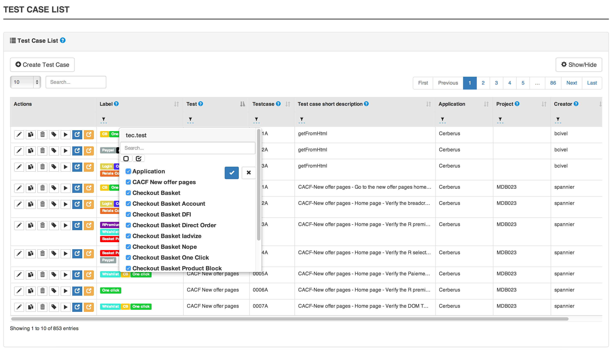
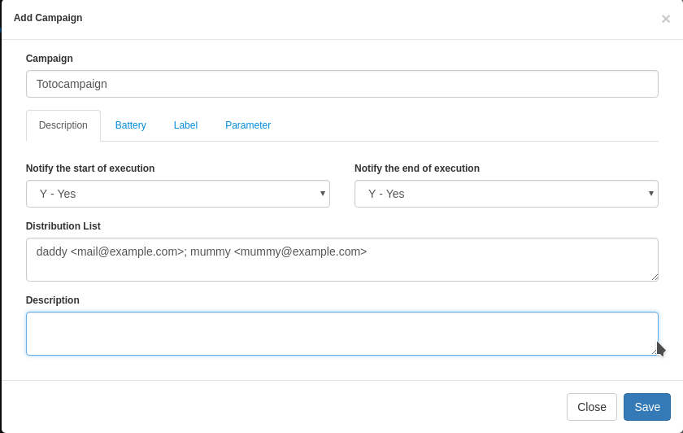
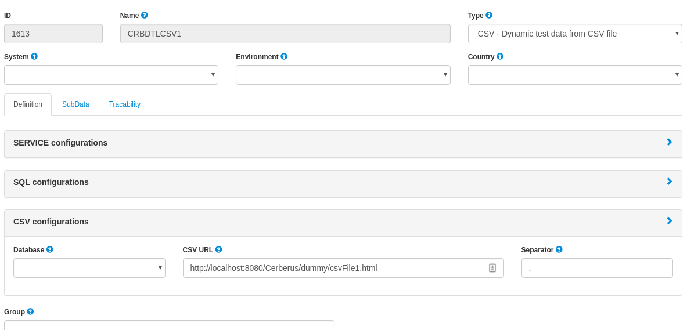
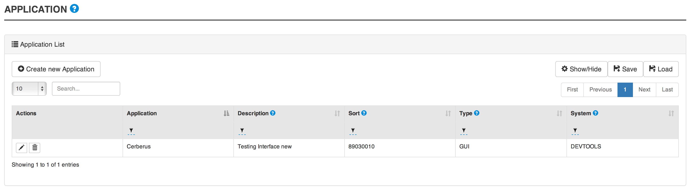
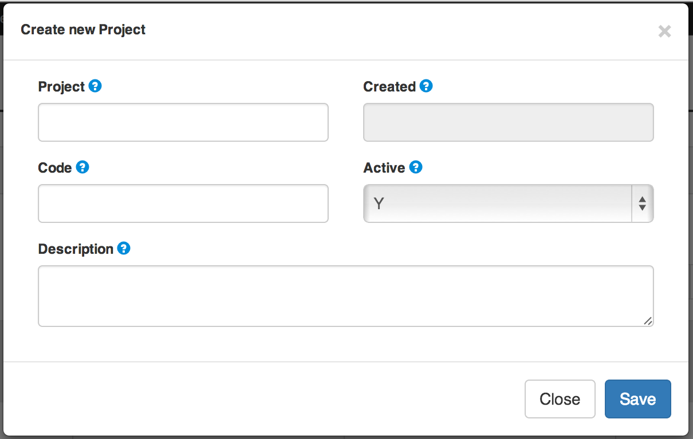
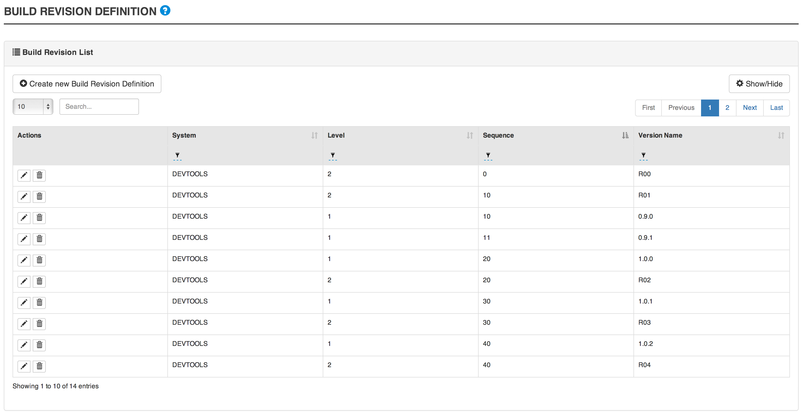
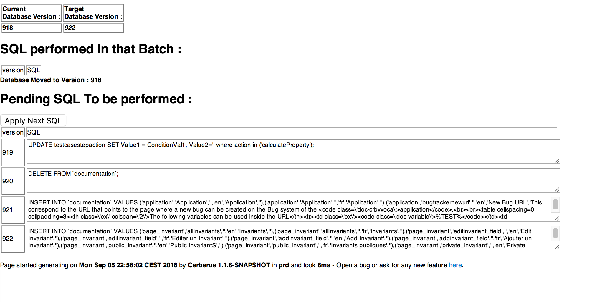
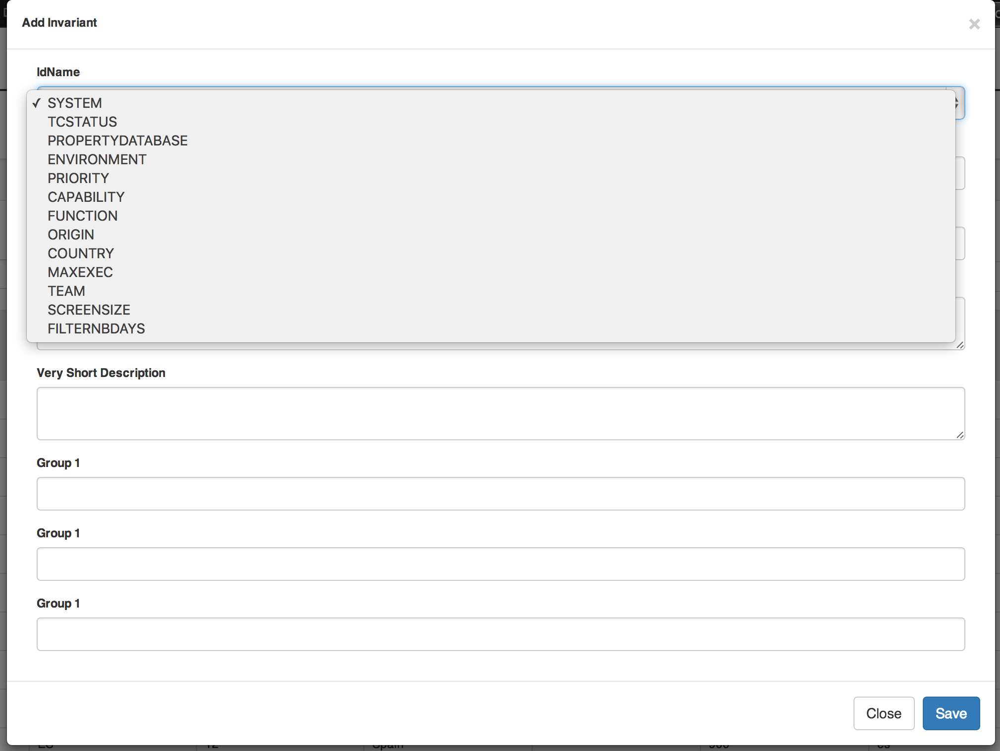

|
Note
|
Ce document est en cours de développement!
Si vous trouvez des erreurs, ou si des informations vous semblent manquantes, n’hésitez pas à nous soumettre une "issue", ou un "pull request". Nous vous encourageons à nous soumettre des "issues" et de prendre part aux discussions sur les différents aspects du project sur github. Nous avons grand plaisir à accueillir chaque nouveaux contributeurs! |
Introduction à Cerberus
Cette section décrit comment installer Cerberus et ses outils externes associés.
 Cette partie vous semble incomplète ou incorrecte? Soyez libre de nous soumettre votre version.
Cette partie vous semble incomplète ou incorrecte? Soyez libre de nous soumettre votre version.
1. Qu’est ce que Cerberus?
Cerberus is a webapplication, open source, test repository, user friendly, can interface with robot in multiple technologies.
 Cette partie vous semble incomplète ou incorrecte? Soyez libre de nous soumettre votre version.
Cette partie vous semble incomplète ou incorrecte? Soyez libre de nous soumettre votre version.
Démarrage
In this section, you will find information on how is organized the Cerberus application.
We assume that you already configured your application, as described in the [Application configuration] section.
 Cette partie vous semble incomplète ou incorrecte? Soyez libre de nous soumettre votre version.
Cette partie vous semble incomplète ou incorrecte? Soyez libre de nous soumettre votre version.
2. Bienvenue dans l’application Cerberus
2.1. Connection
L’accès à Cerberus requiert une authentification. Il est donc nécessaire d’utiliser les informations de connection reçues par mail à la création de votre compte.

|
Note
|
Si vous n’avez pas de compte utilisateur, contactez votre administrateur Cerberus (l’e-mail est présent dans la popup de login). |
|
Note
|
En cas d’oubli, la réinitialisation automatique du mot de passe est possible en remplissant le formulaire accessible en cliquant sur le lien "Mot de passe oublié". |
Une fois connecté, vous accedez à la page d’accueil.
2.2. Page d’accueil
- Sur cette page d’accueil, vous trouverez des informations sur
-
-
les cas de tests par application regroupés par status (Plus d’information sur les status dans le section [workflow]);
-
les dernières executions par tag (Cf Personalisation);
-
les versions des applications déployées par environnement;
-

2.2.1. Personalisation
Il est possible de définir la liste de tag à afficher.

Mais il est egalement possible de definir un texte qui servira de recherche dyamique des tag.
NB : Le texte de recherche ne sera utilisé que si la liste des tags n’est pas définie.
2.3. Premiers pas
2.3.1. Lexique
Ci-dessous vous trouverez la définition des termes couramment utilisés dans Cerberus
-
Application : Composant technique
-
Batterie : Groupement de cas de test voués à être exécutés ensemble. Cette fonctionnalité devrait être remplacée par les labels prochainement.
-
Campagne : Batterie ou ensemble de batteries auxquelles on vient ajouter des paramètres d’exécution (pays - environnement - navigateur)
-
Cas de test : Scénario de test composé d’étapes, d’actions et de contrôles. (User story)
-
Label : Etiquette de description des cas de test, il offre la possibilité de grouper et filtrer facilement.
-
Système : Application métier ou CI
-
Test : Ensemble de cas de tests regroupés découpés par fonction d’application. Les exécutions de cas de tests peuvent être triées par Test.
2.3.2. Représentation
Vous trouverez dans cette section la représentation graphique des éléments principaux de Cerberus.
Ci-dessous une représentation du système :

Ci-dessous une représentation d’un cas de test :

2.3.3. Tutoriels
Mes premiers pas en tant qu’administrateur
|
Note
|
Pour les utilisateurs sans droits d’administration veuillez vous reporter à la section suivante : "Mes premiers pas" |
Ci-dessous vous trouverez les étapes de configuration pour une application à tester.
-
Créez un système. Voir création des Invariants
|
Note
|
Vérifiez que vous êtes sur ce système (menu déroulant en haut à droite) 
|
-
Créez un environnement. Exemple : PROD FR (cf Environnement)
-
Créez une application. Exemple : Google (cf Application)
-
Editez de nouveau cette application, vous avez maintenant accès à plus de paramètres. Dans l’onglet environnement, créer l’environnement PROD FR (pour cette application) et indiquer l’url : http://www.google.fr
Cette étape termine la partie paramètres « techniques » de ce tutoriel. Veuillez-vous référer à la section suivante pour l’implémentation du cas de test
Mes premiers pas
|
Note
|
Avant de vous lancer dans les étapes suivantes veillez à ce que votre administrateur de Cerberus ait bien créé le système et l’application. |
Ci-dessous vous trouverez les étapes de création d’un cas de test et son éxecution.
-
Créez un test. Exemple : « Moteur de recherche » (cf Create test)
-
Accédez à la liste de cas de test et créez un cas de test (cf Create TestCase). Champs obligatoires : Test / Application / TestCase ID (normalement pré-rempli par une référence)
|
Note
|
Onglet critère d’activation : veillez à activer votre cas de test en PROD si vous souhaitez le lancer sur cet environnement. (par defaut non actif en PROD) Pour l’exemple de google nous allons lancer sur l’environnement de PROD |
-
Votre cas de test maintenant créé, retrouvez le dans la liste à l’aide des filtres.
-
Editez-le (cf Implement TestCase)
-
Créez maintenant une première étape « Ouvrir google »
-
Ajoutez une première action : OpenURL en remplissant le champ « www.google.com » ou OpenURLWithBase en remplissant le champ avec « / » (si l’URL a déjà été définie dans les paramètres de l’application)
-
Vous pouvez ajouter un contrôle : VerifyTitle Title = Google
-
Sauvegarder le script et cliquer sur le bouton Run.
-
Vous êtes à présent dans la page d’execution. Selectionnez le pays / environnement
-
Indiquer les informations de votre robot. Paramètres robot obligatoires : IP / port / navigateur.
|
Note
|
Vous devez au préalable avoir lancé votre selenium (cf Selenium) |
|
Tip
|
Astuce pour voir l’execution en direct modifier le paramètre Synchroneous à N. Vous assisterez en direct à l’execution pas à pas |
-
Cliquez sur le bouton d’éxecution.

Bravo, vous venez d’éxecuter votre premier cas de test sur Cerberus !
 Cette partie vous semble incomplète ou incorrecte? Soyez libre de nous soumettre votre version.
Cette partie vous semble incomplète ou incorrecte? Soyez libre de nous soumettre votre version.
3. Vue d’ensemble
In this section, you will find general information on Cerberus. How it is organized, How the tables are Customizable…etc.
 Cette partie vous semble incomplète ou incorrecte? Soyez libre de nous soumettre votre version.
Cette partie vous semble incomplète ou incorrecte? Soyez libre de nous soumettre votre version.
Gestion des tests
In this section, you will find information on test management in Cerberus.
 Cette partie vous semble incomplète ou incorrecte? Soyez libre de nous soumettre votre version.
Cette partie vous semble incomplète ou incorrecte? Soyez libre de nous soumettre votre version.
4. Test
4.1. Test
In this section, you will find information on Test in Cerberus.
Test description…

|
Note
|
There are 2 Tests that have a specific behaviour and allow to add before and after any test case some other testcases. Those 2 tests are 'Pre Testing' and 'Post Testing'. They are identifying all test cases that will respectivly be added at the begginning and the end of the testcases. For a given testcase running on an application app1, the following rules will apply : . Only testcases inside 'Pre Testing' and 'Post Testing' will be added. . Only active testcases will be added. . Only testcases that are within the From Major / From Minor and To Major / To Minor . The testcases will be added sorted by testcase id. |
4.2. Test attributes
Field |
Description |
Test |
Test name. |
Description |
Description of the test. |
Active |
Define if the test is active. |
4.3. Create test
-
Go to Test → Test.

-
Click on Create Test.
-
Feed the Test field with the test name.
-
Feed the Description field with a short description of this test.
-
Select the activation information in the Active field.
-
Click on Save.
-
 Cette partie vous semble incomplète ou incorrecte? Soyez libre de nous soumettre votre version.
Cette partie vous semble incomplète ou incorrecte? Soyez libre de nous soumettre votre version.
5. Cas de test
5.1. TestCase List

5.2. Shortcut
5.2.1. Edit TestCase

5.2.2. Delete TestCase

5.2.3. Run TestCase
5.2.4. Duplicate TestCase

5.3. TestCase attributes
Field |
Description |
Test |
Test name on which testcase is linked. |
Testcase |
An ID. |
Description |
Define if the test is active. |
Application |
The application for which the testcase is defined. |
5.4. Create TestCase
-
Go to TestCase → TestCase List.
-
Click on Create TestCase.
-
Feed the Test field with the test name.
-
Feed the Description field with a short description of this test.
-
Continue to describe.
-
Click on Save.
-
5.5. Implement TestCase
5.5.1. Step
-
Click on Add step to display the following window.

-
Feed a Description and click on Add for a new step.
-
Or search for a step in library then click on Add.

Your step is created. if you want to put it in library, just click on the book on the right side. A step in library will be available to add it in all test cases of your current system.

In the following screenshot you can see a use step. This step is imported from the previous library step. You are not able to modify it (all fields are grey). But you can find a link at the top to open the library if you want to modify your step. All use steps from this library will be impacted by your modification.
To modify only this use step, you have to click on the padlock icon but it will not be a use step anymore. (modification on library step will not affect it)

|
Note
|
You have the possibility to switch the position of your steps by clicking on the 3 dots. |


|
Note
|
It is possible to loop over a step using the following configuration. |
5.5.2. Action
Action |
Description |
Example |
Unknown |
Unknown action. Should be used when the action is not yet known. Warning: make the execution fail. |
|
click |
Click on the left mouse button on an element inside the current page. Value1 Identifier and name of the element to click in the form of : identifier=html_reference. |
|
mouseLeftButtonPress |
Press and keep the left mouse button pressed until the action 'mouseLeftButtonRelease' is executed. |
|
mouseLeftButtonRelease |
release the mouse button. Usefull with ButtonPress to perform drag & drop |
|
doubleClick |
Double click on an element inside the current page. Value1 Identifier and name of the element to click in the form of : identifier=html_reference. Example : id=html_reference |
|
rightClick |
Right click on an element inside the current page. Value1 Identifier and name of the element to click in the form of : identifier=html_reference. Example : id=html_reference |
|
mouseOver |
mouse cursor over an object Element path : the id of the element |
|
focustoIframe |
TBD |
|
focustoDefaultIframe |
TBD |
|
switchToWindow |
Switch to another window (like popup dialog). Just specify the title or the URL of the other window to switch to this window. |
|
manageDialog |
Close the browser popup alert windows either by accepting it with |
|
manageDialogKeypress |
Keypress inside the browser popup alert windows. You can use special keys with [TAB] Supported keys are : [BACK_SPACE], [TAB], [RETURN], [ENTER], [SHIFT], [LEFT_SHIFT], [CONTROL], [LEFT_CONTROL], [ALT], [LEFT_ALT], [ESCAPE], [SPACE], [PAGE_UP], [PAGE_DOWN], [LEFT], [ARROW_LEFT], [UP], [ARROW_UP], [RIGHT], [ARROW_RIGHT], [DOWN], [ARROW_DOWN], [DELETE], [SEMICOLON], [EQUALS], [NUMPAD0], [NUMPAD1], [NUMPAD2], [NUMPAD3], [NUMPAD4], [NUMPAD5], [NUMPAD6], [NUMPAD7], [NUMPAD8], [NUMPAD9], [MULTIPLY], [ADD], [SEPARATOR], [SUBTRACT], [DECIMAL], [DIVIDE], [F1], [F2], [F3], [F4], [F5], [F6], [F7], [F8], [F9], [F10], [F11], [F12] |
|
OpenUrlWithBase |
OpenUrl action using the base defined in the application / environment section |
|
OpenUrlLogin |
OpenUrl action using the login page defined at application / environment level. |
|
OpenUrl |
Open a specified url |
|
executeJS |
execute a JS script (no output can be retrieved) |
|
openApp |
TBD |
|
closeApp |
TBD |
|
select |
select an option in a <select> tag. this 'text' must be defined : <option value="text"> |
|
keypress |
will allow you to press any key in the current web page. Value1 : Location of the element from which press the key. Value2 : Keycode of the key to press |
Examples : |
type |
Write a data in a field. Element path : the id of the field Property Name : the property containing the value to type (can be a property or text. |
|
hidekeyboard |
Hide the currently visible keyboard |
|
swipe |
The action simulates a user pressing down on the screen, sliding to another position, and removing their finger from the screen. Swipe action can be used neither with unique parameter UP,DOWN,LEFT,RIGHT, or with combination of parameter CUSTOM and x1;y1;x2;y2, which are coordinates of origin point (x1;y1) and relatives coodinates of destination point (x2;y2) |
swipe UP : will swipe from the 2/3 to the 1/3 of the screen. swipe CUSTOM 100;100;0;100 : will swipe from the point (100;100) to the point (100;200) |
wait |
Wait for a certain amount of time Feed a number (ms) or wait for element present feed an element (xpath) |
|
waitVanish |
TBD |
|
callService |
call a service defined the Service Library and provide the output within the execution |
|
executeSqlUpdate |
will allow you to execute SQL update (insert,delete,update). Feed the Database Name and the Script to execute. Database has to be declared to your system and environment. |
|
executeSqlStoredProcedure |
will allow you to execute SQL stored procedure. Feed the Database Name and the Stored Procedure to execute. Database has to be declared to your system and environment. |
|
calculateProperty |
will allow you to calculate a Property defined in the property section of the test case. [Optional] Feed Value2 with another property to affect to the previous Property Name a new value. Useful to override the one defined from the property section during an execution. |
|
doNothing |
Just perform no action. No action will be executed and engine will go to the next action or control |
|
removeDifference |
DEPRECATED |
+For FAT client
In order to perform any action/control (e.g. 'click', 'verifyElementPresent'), Application Object must be used to reference picture.
Keep in mind that for click action, it will be performed in the center of the picture:

The keycodes (see. keypress action) also changes from GUI to FAT type. The syntaxes are:
-
KEYNAMEfor GUI, ex :ENTER -
Key.KEYNAMEfor FAT, exKey.ENTER
5.5.3. Control
Control |
Description |
Example |
Unknown |
Default control when creating a new control |
|
getPageSource |
TBD |
|
takeScreenshot |
Take a screenshot |
|
verifyElementClickable |
OK if Element is clickable. |
|
verifyElementDifferent |
TBD |
|
verifyElementinElement |
TBD |
|
verifyElementEquals |
TBD |
|
verifyElementNotClickable |
TBD |
|
verifyElementNotPresent |
TBD |
|
verifyElementNotVisible |
TBD |
|
verifyElementPresent |
OK if Element is found on the current page. |
|
verifyElementVisible |
OK if Element is visible on the current page. |
|
verifyElementDifferent |
TBD |
|
verifyIntegerEquals |
OK if the Integer1 is equal to the Integer2. |
|
verifyIntegerGreater |
OK if the Integer1 is greater than the Integer2. |
|
verifyIntegerMinor |
OK if the Integer1 is lower than the Integer2. |
|
verifyRegexInElement |
TBD |
|
verifyStringContains |
OK if Property String1 contains the String2. |
|
verifyStringNotContains |
OK if Property String1 do not contains the String2. |
|
verifyStringEqual |
OK if the String1 is equal to the String2. |
|
verifyStringGreater |
OK if the String1 is greater than to the String2 (After in a dictonnary) |
String1 : ZZZ String2 : AAA |
verifyStringMinor |
OK if the String1 is minor than to the String2 (before in a dictonnary) |
String1 : AAA String2 : ZZZ |
verifyTextInDialog |
TBD |
|
verifyTextInElement |
OK if the text found in Element is equal to the Text indicated |
Element : //StatusCode Text : OK |
verifyTextInPage |
TBD |
|
verifyTextNotInElement |
OK if the text found in Element is not equal to the Text indicated |
Element : //StatusCode Text : KO |
verifyTextNotInPage |
TBD |
|
verifyTitle |
TBD |
|
verifyUrl |
OK if the URL of the current page equal to the URL indicated . |
|
verifyXmlTreeStructure |
TBD |
5.5.4. Property
When Clicking on Button  , the Window "Manage Properties" will open.
From there you can :
, the Window "Manage Properties" will open.
From there you can :
-
either manage your TestCase properties
-
or see your inherited properties - coming from the step libraries of your use steps.

Field |
Description |
Property |
Name of the property. |
Type |
The way the property is going to be calculated. |
Value |
Value of the property. |
DB |
DataBase in which the property will "executeSql". |
Length |
When calculating a list of values, defines the number of rows the property will return. |
Row Limit |
When returning a list of values, limits the number of rows the property will consider for random purposes. |
Nature |
Defines the unique value that will be used in the execution. By default, STATIC has no rules defined : it will take the first result it finds. |
Desription |
Description of the property. |
Countries |
Countries for which the property will be calculated (environment parameter). |
5.5.5. Variables
You can use variables in many area of Cerberus. Those variable are used in order to perform some actions of controls in a dynamic way. 3 types of variables can be created :
-
Variables defined from properties inside Test Cases.
-
Variables defined from application object.
-
System Variables
Properties and Application Object are defined by the users while system variable are provided by Cerberus.
The global syntax of a variable is : %[property|object|system].nameOfTheVariable%
This is the list of fields in Cerberus where you can use those variables.
-
Condition Value1 and Value2 at Test Case level.
-
Condition Value1 and Value2 at Step Test Case level.
-
Condition Value1 and Value2 at Action Test Case level.
-
Condition Value1 and Value2 at Control Test Case level.
-
Test Case Action Value 1 and Value 2.
-
Test Case Control Value 1 and Value 2.
-
Test Case Properties Value 1 and Value 2.
-
Path, Envelope and Method at Test Data Library (SOAP) level.
-
SQL Script at Test Data Library (SQL) level
-
Column, Parsing Answer and Column Position at Test Data Library Subdata definition level
-
Path, Request, Operation and Attachement URL at Service level.
-
Request detail (all keys and values) and Header (all keys and values) at Service level.
When a variable is detected in one of those field, Cerberus will replace it by the value during the execution.
-
If the variable is an object, the value (that never change) is just replaced.
-
If the variable is a system variable, the value is calculated and replaced at the same time (for ex : time will be the time of the replacement).
-
If the variable is a property, it gets automatically calculated at the time of the replacement. If was already calculated before, the same value (already calculated) is replaced. NOTE: In order to force the calculation of a property at a certain timing, calculateProperty Action can be inserted just before the action is used in a field.
Variables can be defined in a recursive way. That means that the following syntax :
%property.%system.country%% will be first replaced by
%property.FR% and then by FR property value (if it exist).
Please note also that, if at the end of the decode operation, there are still references to %property.???% or %system.???% or %object.%%% in the field, the corresponding test case will report an error and generate an FA status.
Property Variables
Property variable allow to have multi row content. As a consequence the full syntax will look like this :
%property.NameOfTheVariable.rowNb.SubData%
If rowNb is not defined, the 1st row will be used. As a consequence, the syntax %property.rowNb.nameOfTheVariable% is the same as %property.1.nameOfTheVariable%
If SubData is not defined, the key velue subdata will be used.
Object Variables
-
%object.myobject.value% : Get the application object myobject’s value
-
%object.myobject.picturepath% : Get the application object myobject’s picture path
-
%object.myobject.pictureurl% : Get the application object myobject’s picure url
System Variables
Below you will find useful properties :
Value |
Description |
%system.SYSTEM% |
System value |
%system.APPLI% |
Application name |
%system.BROWSER% |
Browser name of the current execution. |
%system.ROBOT% |
Robot name of the current execution. |
%system.ROBOTDECLI% |
Robot declination name of the current execution. |
%system.ROBOTHOST% |
Url du Robot courrant |
%system.SCREENSIZE% |
Robot screensize of the current execution. |
%system.APP_DOMAIN% |
Domain of the Application (defined at application level) |
%system.APP_HOST% |
Host of the tested Application |
%system.APP_CONTEXTROOT% |
Context Root of the tested Application |
%system.EXEURL% |
Full Url of the tested Application |
%system.APP_VAR1% |
VAR1 of the application on the environment. |
%system.APP_VAR2% |
VAR2 of the application on the environment. |
%system.APP_VAR3% |
VAR3 of the application on the environment. |
%system.APP_VAR4% |
VAR4 of the application on the environment. |
%system.ENV% |
Environment value |
%system.ENVGP% |
Environment group code |
%system.COUNTRY% |
Country code |
%system.COUNTRYGP1% |
Country group1 value |
%system.COUNTRYGP2% |
Country group2 value |
%system.COUNTRYGP3% |
Country group3 value |
%system.COUNTRYGP4% |
Country group4 value |
%system.COUNTRYGP5% |
Country group5 value |
%system.COUNTRYGP6% |
Country group6 value |
%system.COUNTRYGP7% |
Country group7 value |
%system.COUNTRYGP8% |
Country group8 value |
%system.COUNTRYGP9% |
Country group9 value |
%system.TEST% |
Test. |
%system.TESTCASE% |
TestCase |
%system.TESTCASEDESCRIPTION% |
TestCaseDescription |
%system.SSIP% |
Selenium server IP |
%system.SSPORT% |
Selenium server port |
%system.TAG% |
Execution tag |
%system.EXECUTIONID% |
Execution ID |
%system.EXESTART% |
Start date and time of the execution with format : 2016-12-31 21:24:53.008. |
%system.EXESTORAGEURL% |
Path where media are stored (based from the exeid). |
%system.EXEELAPSEDMS% |
Elapsed time in ms since the beginning of the execution (can be used to perform timing controls). |
%system.CURRENTSTEP_INDEX% |
Index number of the current step execution. Can be used when looping over a step. |
%system.CURRENTSTEP_STARTISO% |
ISO Timestamp of the beginning of the step execution. |
%system.CURRENTSTEP_ELAPSEDMS% |
Elapsed time in ms since the beginning of the current step execution (can be used to perform timing controls). |
%system.STEP.n.RETURNCODE% |
Return Code of the step n. n being the execution sequence of the step (sort). |
%system.LASTSERVICE_HTTPCODE% |
Http return code of the last service called. |
%system.TODAY-yyyy% |
Year of today |
%system.TODAY-MM% |
Month of today |
%system.TODAY-dd% |
Day of today |
%system.TODAY-doy% |
Day of today from the beginning of the year |
%system.TODAY-HH% |
Hour of today |
%system.TODAY-mm% |
Minute of today |
%system.TODAY-ss% |
Second of today |
%system.YESTERDAY-yyyy% |
Year of yesterday |
%system.YESTERDAY-MM% |
Month of yesterday |
%system.YESTERDAY-dd% |
Day of yesterday |
%system.YESTERDAY-doy% |
Day of yesterday from the beginning of the year |
%system.YESTERDAY-HH% |
Hour of yesterday |
%system.YESTERDAY-mm% |
Minute of yesterday |
%system.YESTERDAY-ss% |
Second of yesterday |
%system.TOMORROW-yyyy% |
Year of tomorrow |
%system.TOMORROW-MM% |
Month of tomorrow |
%system.TOMORROW-dd% |
Day of tomorrow |
%system.TOMORROW-doy% |
Day of tomorrow from the beginning of the year |
%system.ELAPSED-EXESTART% |
Number of milisecond since the start of the execution. |
%system.ELAPSED-STEPSTART% |
Number of milisecond since the start of the execution of the current step. |
Tricks
You will find below some tricks which help you to implement specific test cases.
|
Note
|
It is possible to create a random property with a number of digit defined. You have to feed the property fields like the screenshot below. This property will be different for each execution. Example: 884592, 004795

|
|
Note
|
It is possible to loop over a step using the following configuration. |
5.5.6. Pose de Contraintes sur le Robot
Il est possible de definir au niveau du cas de test des contraintes (UserAgent et/ou ScreenSize) qui seront utilisées lors de l’execution. Ceci peut être utile pour tester des fonctionalités qui ne s’activent que pour une resolution et/ou un UserAgent bien precis. Il est possible de tuner les liste des UserAgent et ScreenSize proposés en mode autocomplete dans l’interface de Cerberus via les invariant public USERAGENT et SCREENSIZE.
UserAgent et ScreenSize seront definis au moment de l’execution en suivant la regle suivante :
TestCase |
Robot / Execution |
UserAgent Result |
UserAgent1 |
UserAgent1 |
|
UserAgent2 |
UserAgent2 |
|
user Agent unchanged |
||
UserAgent1 |
UserAgent2 |
UserAgent1 |
TestCase |
Robot / Execution |
ScreenSize Result |
1024*768 |
1024*768 |
|
640*360 |
640*360 |
|
Fullscreen |
||
1024*768 |
640*360 |
1024*768 |
 Cette partie vous semble incomplète ou incorrecte? Soyez libre de nous soumettre votre version.
Cette partie vous semble incomplète ou incorrecte? Soyez libre de nous soumettre votre version.
6. Execution
6.1. Introduction
The run options are accessible using the menu Run > Run Test Case
The different sections let the user select the test case(s) to launch and choose its execution parameters.
-
Selection type
-
Environment & Country
-
Robot settings
-
Execution settings
6.2. Selection Type

Manual selection let the user select one or several test cases using the filters.

Campaign selection let the user select a campaign from a dropdown menu. Clicking 'load' button display the selected test cases in the section below.
6.3. Environment & Country
By default, in automatic mode, you can select the preconfigured environment.
Warning: The environment and countries must be configured for the related applications. Besides, the testcase attributes override the configuration (e.g. Active in PROD)
You can also define yourself the url of the application to test. In that case, the environment still needs to be defined in order to determine which data for the property calculation to use. url can have different format :
-
simple string : http://host
-
Composed string for multiple applications using : and ; separators : APP1:qa.cerberus-testing.org;APP2:toto.cerberus-testing.org
-
Composed string for multiple applications using JSON format : {"APP1":"https://qa.cerberus-testing.org:443","APP2":"http://toto.cerberus-testing.org"}

Last you need to select one or more countries.

6.4. Robots settings

The robots settings can be linked to a campaign. If so, the robot(s) will be automatically selected when the corresponding campaign is loaded.
However, if the user changes this value, it will be overriden by his selection.
'Save Robot Preferencies' button save these settings in the browser cache of the device.
The selected robot can be edited using the left button. A new robot can be created using the right one.
6.5. Execution settings
-
Tag : regroup all the execution in the same tag. It help identify this execution for reporting sake. If no value, the tag will be a timestamp. you can use %USER% and %TIMESTAMP% variable in this field.
-
Verbose : Verbose define how much trace information will be output on the execution. The higher the level is from 0 to 2 the more information will be and the slower the testcase will be executed.
Trace \ Verbose Level |
0 |
1 |
2 |
Chrome & Firefox display |
no (headless) |
yes |
yes |
JSON INFO Application Server logs |
no |
yes |
yes |
-
Screenshot : define if screenshots and video have to be taken and the frequency.
-
Page Source : define if Page source have to be taken and the frequency.
-
Robot Log : define if robot (Selenium or Appium) log will be taken.
-
Timeout : define the maximum time (in ms) to spent in an action or control. Correspond to the time Cerberus will wait until it consider that a field or object is not available.
-
Retries : Defined the number of retries for each test cases. A retry is a re submission of a testcase (in the queue) if its status is different from OK.
-
Priority : define the priority for all the test cases (reminder: the lowest (=0) the most important). Default value is 1000. Tips: Use 0 priority only when relaunching manually a test case.
-
Manual Execution : define the test case execution type: Y : manual, N : Automatic, A : Automaticly determined from test case. default value is 'N'
Execution parameter \ Test Case Group |
AUTOMATED |
MANUAL |
PRIVATE |
N |
Automated execution |
Automated execution |
Automated execution |
Y |
Manual execution |
Manual execution |
Manual execution |
A |
Automated execution |
Manual Execution |
Automated execution |
6.6. Execution result status

Here is a summary of all execution status with their corresponding meanings.
-
OK : The execution was performed correctly and all controls were OK.
-
KO : The execution was performed correcly and at least one control failed resulting a global KO. That means that a bug needs to be reported to development teams.
-
FA : The execution did not performed correctly and needs a correction from the team that is in charge of managing the testcases. It couls be a failed SQL or action during the test.
-
NA : Test could not be executed as a data could not be retreived. That probably means that the test is not possible in the current environment/status.
-
NE : Test Case was not executed (following a condition execution).
-
WE : Test Case was not yet executed (waiting a manual execution).
-
PE : Test Case is currently running.
-
QU : Test Case is still waiting in the queue for ressources or constrains to be released.
-
QE : Test Case failed in the queue and will not be triggered.
-
CA : Test Case has been cancelled by user.
 Cette partie vous semble incomplète ou incorrecte? Soyez libre de nous soumettre votre version.
Cette partie vous semble incomplète ou incorrecte? Soyez libre de nous soumettre votre version.
7. Execution Queuing system
7.1. Workflow
The queuing system allow you to submit many execution and have them executed automatically ASAP depending on constrain configuration.
-
Every execution that are submitted inside the queue follow a specific workflow.

-
In order to monitor and administer the workflow every execution gets a State with an associated message. Each time the State is modified the Last State date is updated accordingly.
-
Each execution enter the queue in a QUEUED State.
-
The queue Job will analyse all the executions that are in QUEUED State in order to decide (or not) to start the execution. If none of the constrains are applied, the execution moves to a WAITING State. That state corresponding to the execution being in the final (JAVA) queue before execution.
-
It then moves to STARTING as soon as the call to the RunTestCase Servlet is done.
-
Then depending on if execution could be started, it moves in ERROR State with the associated error message or EXECUTING.
-
An execution in EXECUTING State have the execution ID defined and the followup of that execution can be monitored directly on that execution.
-
Once the execution is finished (no matter what could be the end result in terms of status - OK, KO, FA, NA, …), the execution move to the final state DONE.
-
Execution that are in state ERROR can either be submitted again in QUEUED or cancelled in state CANCELLED
-
Executions that are in state CANCELLED can also be submitted again in QUEUED state.
-
All executions that are in State QUEUED, WAITING, ERROR and CANCELLED can be modified.
-
All executions that are in State STARTING, EXECUTING and DONE cannot be modified.
7.2. Administration
The 'Executions in Queue' tab from the Executions in queue screen allow to see and count the number of exe in various state.

-
Button 'Filter Pending' allow to directly filter to QUEUED State.
-
Button 'Filter Executing' allow to filter state : WAITING, STARTING and EXECUTING
-
Refresh button allow to refresh the list without fully loading the page.
On each execution, you can modify its content by clicking on the edit button.

-
Button 'Save' allow to modify the parameters of the execution.
-
Button 'Save and submit again' is to save the new parameters and change the status again to QUEUED
-
Button 'Cancel this execution' is to cancel the execution by moving it state to CANCELLED
You can also duplicate it to a new execution that will be inserted in QUEUED state by clicking on the duplicate button.

-
Button 'Copy and submit a new execution' allow to copy the execution to a new one that will be inserted in QUEUED state.
Mass Action allow to perform similar operation in a massive way. Select a list of exe and click on Mass Action button in order to open the following screen:

-
'move to QUEUED' allow to move an execution that is in state ERROR or CANCELLED back to QUEUED state
-
'copy to QUEUED' allow to copy the list of execution to new executions that will all be in QUEUED state.
-
'move to CANCELLED' allow to cancel the list of execution that are in state ERROR or QUEUED
-
'force to CANCELLED' should be used only in very rare occasion when some executions are stuck in WAITING, STARTING or EXECUTING state. That could happen for example if Cerberus has been stopped when executions were still processing.

On that screen you can massively modify the priority of the execution list. Just put the new priority value and cick on 'Change Priority'
7.3. Priorities management
-
By default, execution are treated in FIFO mode.
-
Each time the queue job analyse the list of QUEUED execution, it will analyse them sorted by priority ascending + by queueID ascending.
-
Default Priority value is 1000.
-
If you want to increase the priority of the given execution, you can change it to any value bellow 1000. The lower priority value takes, the higher the priority will be.
-
If you want some execution to be treated last, change it to any value above 1000.
7.4. Constrain management
When submitting too many execution in a too short period of time, the result could be uncertain. In order to prevent that issue, 3 levels of constrains can be defined.
-
constrain 'constrain1_global' : Global level of constrain in order to secure that Cerberus itself is not saturated by number of simultaneous execution. Parameter cerberus_queueexecution_global_threadpoolsize allow to configure the number of simultaneous execution will handle in total.
-
constrain 'constrain2_application' : Application level constrain. An application on a given environment could have some limitation that can be controlled by that constrain. The number of simultaneous execution can be defined in 'Pool Size' field from application screen or Environment screen.
-
constrain 'constrain3_robot' : Robot level constrain. Some robot cannot handle too many execution at the same time. The configuration of simultaneous execution is done at robot host level. Please use public invariant ROBOTHOST in order to define that number of simultaneous execution using gp1 field.

A default value can be configured with parameter _cerberus_queueexecution_defaultrobothost_threadpoolsize_. That parameter will be used in case the invariant entry does not exist or cannot be converted to numeric value.
-
NB1 : Only the applications that require a robot will enter to that constrain (GUI, IPA, APK, FAT).
-
NB2 : Robot host will be taken by preference from Robot and then from execution itself.
The 'Pools Follow Up' tab allow to control and follow up all those constrain value

In that example, there is currently 2 executions for a global maximum of 50 executions. A total of 8 executions are still in the queue (that will be treated once the 2 pending will be finished). Saturation level is at 4% and considering that global queue is not saturated, there are no execution pending on saturated queue.
There is currently 2 executions running against Cerberus application in DEV for RX country. On that application / environment, a total of 6 executions are still in queue. That queue is saturated at 100% and 6 executions are in the queue on that saturated queue.
There is currently 2 executions running against localhost robot. On that robot host, a total of 7 executions are still in queue. That queue is also saturated at 100% and 7 executions are in the queue on that saturated queue.
Sorting the last column will give the constrain/queue that require the most attention in order to speedup the global execution of the campaign.
TIP : In case you have an execution that you don’t understand why it is not released, you can modify for that execution the debug Flag to Y. Next time the queue job execute, the state message will detail the constrain that prevent the execution to be released.
The 'Queue Job Status' tab allow to monitor the 'queue execution job'.

-
'Job Status' is at Y when the job that analyse the queue is currently running (that should almost never happen).
-
'Job Start' correspond to the time when the last job was triggered. That job automatically trigger when a new execution is inserted inside the queue or an execution finish (releasing some space for a new execution to start).
-
'Job Activate' is at Y if the Job is enable. Job can be disable (in case you want to pause the release of any new execution) or enable by changing the parameter cerberus_queueexecution_enable.
Button 'Force Execution' will force the execution in case the job is not automatically triggered.
 Cette partie vous semble incomplète ou incorrecte? Soyez libre de nous soumettre votre version.
Cette partie vous semble incomplète ou incorrecte? Soyez libre de nous soumettre votre version.
8. Campagne de test
8.1. Test campaign
A campaign is composed of
-
a list of testcases (that can be specified either by test battery of labels)
-
a list of country(ies)
-
a list of environment(s)
-
a list of browser.
Campaign is used when you want to trigger a perimeter of testcase on a given country and environment. Campaign name can be specified when calling public API AddToExecutionQueue.
When a Campaign execution is triggered, notifications can be sent to a distribution list at the beginning or the end of the campaign execution.
Flags can be used in order to activate the sending of the email.
Distribution list can be configured.
Email from, subject and body can be configured by changing parameters that start by cerberus_notification_tagexecutionend and cerberus_notification_tagexecutionstart

8.2. Schedule campaign
The campaigns can be scheduled through the modal. Open the scheduler tab and pass the Quartz-CRON expressions that will plan the execution.
Cron is an expression format that will allow you to define a frequency of execution. To generate one easily use the following site: http://www.cronmaker.com/
you can add as many CRON entries as you want
 Cette partie vous semble incomplète ou incorrecte? Soyez libre de nous soumettre votre version.
Cette partie vous semble incomplète ou incorrecte? Soyez libre de nous soumettre votre version.
9. Label
9.1. Label

9.2. Label attributes
Field |
Description |
System |
System on which the label will be available. |
Label |
Name of the label. |
Color |
Color in #hex format. |
Parent Label ID |
Not implemented yet! Allow to link the label to another one in order to group them. |
Description |
This is a short description of the label. |
9.3. Create label
-
Go to TestCase → Label.
-
Click on Create Label button.
-
Select the System on which the label will be available.
-
Feed the Label field with the name of the label.
-
Choose the Color to apply to this label.
-
Feed the Description field with a short description of the label.
-
Click on Save.
-
 Cette partie vous semble incomplète ou incorrecte? Soyez libre de nous soumettre votre version.
Cette partie vous semble incomplète ou incorrecte? Soyez libre de nous soumettre votre version.
Librairie
In this section, you will find information on library in Cerberus
 Cette partie vous semble incomplète ou incorrecte? Soyez libre de nous soumettre votre version.
Cette partie vous semble incomplète ou incorrecte? Soyez libre de nous soumettre votre version.
10. Librairie de données
10.1. Créer une donnée
A Test Data Library is used to store or define the way to retrieve the data that will be necessary to perform the tests. Different way of getting the data can be used (INTERNAL, SQL, SERVICE or CSV) but that definition is independent from the test case definition so that you can easily change from one to another without impacting all the corresponding test cases.
-
Cliquer sur Data → Data Library.

-
Cliquer sur Create New Entry button.
-
Indiquer le Nom
-
Selectionner le Type de la donnée.
-
Selectionner un Système, un Environnement, un Pays (champs non obligatoires).
-
Remplir les champs liés à votre configuration.
-
Remplir une Description.
-
Aller dans l’onglet SubData
-
Remplir les informations de vos subdatas liées à votre configuration. Se référer à la section Configurations des données pour plus d’informations.
-
Cliquer sur Ajouter.
-
The first sub-data does not require a name, it correspond to the key of the datalib and should be unique to that entry. Inside a testcase, if property PROP1 is defined as getFromTestDataLib on that data, that sub data is retreived as %PROP1%. The other sub data values are retreived as %PROP1.SUBDATA1%.
Si aucun environnement, système ou pays n’est sélectionné, la donnée sera disponible sur tous les environnements, systèmes et pays.
10.2. Configurations des données
10.2.1. INTERNAL configuration
This is used to store the test data directly inside Cerberus. This is considered as being static as it will require to define manually each data inside Cerberus. No specific configuration needed, just feed static sub data values in subdata tab.

NOTE : You can define as many INTERNAL data lib entry as you want be giving them the same name. That way, Cerberus will be able to pick one of them from that list (just like it would for the dynamic type such as SQL, SRVICE or CSV).
10.2.2. SQL configuration
This is used to retrieve the test data in a dynamic way from any database that has JDCB driver available (it still require Glassfish configuration to create the corresponding connection pool). The SQL will be performed during the test execution to get the data in the right environment at the right timing..

Field |
Description |
Database |
Database where the script attribute should be executed. |
Script |
SQL Script you want to execute. |
All Subdata now need to be defined in Column with the name of the column where the subdata is defined.
10.2.3. SERVICE configuration
Just like SQL, it will get the data in a dynamic way but from a service call in stead of an SQL. The best option is to define a corresponding service (Service) and point to it (it can then be REST (both GET or POST) or SOAP).

But you can also directly define a Service call request (Service Path, Method and Envelope) if it is in a SOAP format.

Field |
Description |
Database |
Database where the Service Path will be requested. (optional) |
Service |
Name of the service that define the request. |
Service Path |
Location of the service. Example: http://mydomain/mywebservicelocationmywebservicelocation |
Method |
Method that is invoked by the SOAP request/call. |
Envelope |
Envelope that is sent in the SOAP request. |
All Subdata now need to be defined in Parsing Answer with the xpath or jsonpath where the subdata is defined.


10.2.4. CSV configuration
Just like SQL and SERVICE, it will get the data in a dynamic way but from a csv flat file (that can be static or dynamic). Just define the path to the csv file and separator used.

Field |
Description |
Database |
Name of the database the define the root path where to get the CSV file. (optional) |
CSV URL |
CSV URL specifies the URL where the CSV can be reached. Can be a full URL but also a relative URL in case the Database information is provided and configured at environment level. |
Separator |
Separator used parsing a CSV. |
All Subdata now need to be defined in Column Position with an integer that define the number of the column where the subdata is defined.

10.2.5. Database field configuration
Database can be configured for data library of types : SQL, SERVICE and CSV. It is used in order to make the access to the data linked to the environment so that, a testcase executed in PROD environment will not call the same URL (or access the same JDBC ressource) as in UAT.

In that example, CRB database has been defined and as a consequence, CSV URL has been modified to be relative.
Databases can be created inside invariant screen. Use PROPERTYDATABASE idname.

Once the database is created in invariant table and used inside the test data library, you can define the context of the data access calls for each environment (System + Country + Environment) inside the Environment screen for the 3 types of datasource :
-
For SQL Test Data Library -→ JDBC Ressource : Connection pool name to be configured inside Glassfish application server.
-
For SERVICE Test Data Library -→ SOAP Service URL : Left part of the URL that will be used to call the Service URL
-
For CSV Test Data Library -→ CSV Service URL : Left part of the URL that will be used to get the CSV file.

 Cette partie vous semble incomplète ou incorrecte? Soyez libre de nous soumettre votre version.
Cette partie vous semble incomplète ou incorrecte? Soyez libre de nous soumettre votre version.
Intégration
In this section, you will find information on how to use Cerberus in your continuous integration organization.
 Cette partie vous semble incomplète ou incorrecte? Soyez libre de nous soumettre votre version.
Cette partie vous semble incomplète ou incorrecte? Soyez libre de nous soumettre votre version.
11. Environnement
Create environment
In this section, you will find information on how to manage environment in Cerberus.

-
Go to Integration → Environment

-
Click on Create New Environment
-
Select the System on which the environment will be created.
-
Select the Country of the environment. See Country section for more information.
-
Select the Environement. See Environment section for more information.
-
Continue to describe…
-
Click on Save
-
 Cette partie vous semble incomplète ou incorrecte? Soyez libre de nous soumettre votre version.
Cette partie vous semble incomplète ou incorrecte? Soyez libre de nous soumettre votre version.
12. Application
12.1. Application
In this section, you will find information on application configuration in Cerberus.

12.2. Application attributes
Field |
Description |
Application |
Cell in column 2, row 3 |
Description |
Cell in column 2, row 3 |
Sort |
Cell in column 2, row 3 |
Type |
The Type of the application define whether the application is a GUI, a service or a batch treatment. More detail in the Application type section. |
New Bug URL |
This correspond to the URL that points to the page where a new bug can be created on the Bug system of the application. More detail in the New Bug URL section. |
12.2.1. Application type
- Application type recognizable by Cerberus
-
-
APK (Android application)
-
BAT (BATCH application)
-
GUI (Web application)
-
IPA (IOS application)
-
SRV (Service)
-
WS (Web Service)
-
NONE (Not defined)
-
12.2.2. New Bug URL
This correspond to the URL that points to the page where a new bug can be created on the Bug system of the application.
The following variables can be used inside the URL :
%TEST% |
Test |
%TESTCASE% |
Test case reference |
%TESTCASEDESC% |
Description of the test case |
%EXEID% |
Execution ID |
%EXEDATE% |
Start date and time of the execution |
%ENV% |
Environment |
%COUNTRY% |
Country |
%BUILD% |
Build |
%REV% |
Revision |
12.3. Create application
-
Go to Integration → Application

-
Click on Create New Application
-
Feed the Application field with the application name.
-
Feed the Description field with a short description of this application.
-
Choose the application type in Type
-
Select the application deploy type in Deploy Type
-
Click on Save
-
 Cette partie vous semble incomplète ou incorrecte? Soyez libre de nous soumettre votre version.
Cette partie vous semble incomplète ou incorrecte? Soyez libre de nous soumettre votre version.
13. Objet d’Application
13.1. Attibuts des objects d’application
Dans cette section, vous allez trouver des informations à propos des objets d’application

Champ |
Description |
Application |
L’application liée à l’objet |
Object |
Le nom de l’objet |
Value |
La valeur de l’objet |
File Name |
L’Image chargée qui représente l’objet |
 Cette partie vous semble incomplète ou incorrecte? Soyez libre de nous soumettre votre version.
Cette partie vous semble incomplète ou incorrecte? Soyez libre de nous soumettre votre version.
14. Librairie de Services
In this section, you will find information on SOAP library in Cerberus.
 Cette partie vous semble incomplète ou incorrecte? Soyez libre de nous soumettre votre version.
Cette partie vous semble incomplète ou incorrecte? Soyez libre de nous soumettre votre version.
15. Librairie de SQL
In this section, you will find information on SQL library in Cerberus.
 Cette partie vous semble incomplète ou incorrecte? Soyez libre de nous soumettre votre version.
Cette partie vous semble incomplète ou incorrecte? Soyez libre de nous soumettre votre version.
16. Type de déploiement
16.1. Deploy Type
In this section, you will find information on deploy type.

16.2. Deploy Type attributes
Field |
Description |
Deploy Type |
A name of a deploy type. |
Description |
A description of the deploy type. |
16.3. Create deploy type
-
Go to Integration → DeployType

-
Click on Create New Deployment Type.
-
Feed the Deploy Type field with a name.
-
Feed the Description field with a short description of this deploy type.
-
Click on Save.
-
 Cette partie vous semble incomplète ou incorrecte? Soyez libre de nous soumettre votre version.
Cette partie vous semble incomplète ou incorrecte? Soyez libre de nous soumettre votre version.
17. Chaine
17.1. Batch invariant attributes
In this section, you will find information on batch

Field |
Description |
Batch |
The name of the batch. |
System |
The system for which the batch will be available. |
Description |
A description of the batch. |
17.2. Create deploy type
-
Go to Integration → Batch.

-
Click on Create New Batch.
-
Feed the Deploy Type field with a name.
-
Select the system for which the batch will be available.
-
Feed the Description field with a short description of this batch.
-
Click on Save.
-
 Cette partie vous semble incomplète ou incorrecte? Soyez libre de nous soumettre votre version.
Cette partie vous semble incomplète ou incorrecte? Soyez libre de nous soumettre votre version.
18. Projet
18.1. Project
In this section, you will find information on project in Cerberus

18.2. Project attributes
Field |
Description |
Project |
The name of the project. |
Code |
A code number for the project. |
Description |
A description of the project. |
Active |
Define if the project is active or not. |
18.3. Create deploy type
-
Go to Integration → Project. 
-
Click on Create new Project.
-
Feed the Project field with a name.
-
Feed the Code field of the project.
-
Feed the Description field with a short description of this project.
-
Click on Save.
-
 Cette partie vous semble incomplète ou incorrecte? Soyez libre de nous soumettre votre version.
Cette partie vous semble incomplète ou incorrecte? Soyez libre de nous soumettre votre version.
19. Contenu des builds
19.1. Build content
In this section, you will find information on build content in Cerberus

19.2. Build content attributes
Field |
Description |
To build |
To Build. |
19.3. Create build content
19.3.1. Manually
-
Go to Integration → Build Content.

-
Click on Create new build content.
-
Select the Build.
-
Continue to describe.
-
Click on Save.
-
19.3.2. Automatically
To describe.
 Cette partie vous semble incomplète ou incorrecte? Soyez libre de nous soumettre votre version.
Cette partie vous semble incomplète ou incorrecte? Soyez libre de nous soumettre votre version.
20. Build / Revision
20.1. Build Revision invariant
In this section, you will find information on build revision invariants

20.2. Build Revision invariant attributes
Field |
Description |
System |
The system for which the batch will be available. |
Level |
to describe. |
Sequence |
to describe. |
Version Name |
to describe. |
20.3. Create build/revision invariant
-
Go to Integration → Build Rev Definition.

-
Click on Create new build revision definition.
-
Select the system for which the build/revision will be available.
-
Select the Level. 1 for Build and 2 for Revision.
-
Feed the Sequence field with a number to sort the build/revision.
-
Feed the Version Name field that will be displayed.
-
Click on Save.
-
 Cette partie vous semble incomplète ou incorrecte? Soyez libre de nous soumettre votre version.
Cette partie vous semble incomplète ou incorrecte? Soyez libre de nous soumettre votre version.
Administration
In this section, you will find information on all page and services enabled for administrators.
 Cette partie vous semble incomplète ou incorrecte? Soyez libre de nous soumettre votre version.
Cette partie vous semble incomplète ou incorrecte? Soyez libre de nous soumettre votre version.
21. Gestion des utilisateurs
21.1. Création des utilisateurs
-
Allez dans Administration → Gestion des Utilisateurs.
-
Cliquez sur Créer un Utilisateur.
-
Remplissez l'Identifiant.
-
Remplissez le Nom.
-
Selectionnez l'Equipe (optionnel).
-
Selectionnez le Système par defaut.
-
Selectionnez 'Y' pour la requête pour un nouvel utlisateur. L’utilisateur pourra modifier son mot de passe à la première connexion.
-
Remplissez l'Email.
-
Affecter le niveau de droits souhaité dans l’onglet Groupes.
-
Cliquer sur Sauvegarder.
-
21.2. Droits des utilisateurs
Selectionnez les groupes souhaités pour affecter les droits correspondant.

21.3. Acces par système
 Cette partie vous semble incomplète ou incorrecte? Soyez libre de nous soumettre votre version.
Cette partie vous semble incomplète ou incorrecte? Soyez libre de nous soumettre votre version.
22. Journal de modifications
Most of the change triggered in Cerberus are recorded in a table.

|
Warning
|
To guaranty performance of Cerbeurs over the time, please refer to [Clean Database] section to get information on database maintenance operation. |
 Cette partie vous semble incomplète ou incorrecte? Soyez libre de nous soumettre votre version.
Cette partie vous semble incomplète ou incorrecte? Soyez libre de nous soumettre votre version.
23. Maintenance de base de données
|
Note
|
Every new release of Cerberus come with embeded scripts to upgrade the database in order to guaranty consistency between the application and its database. |
After updating your cerberus version, as described in the [Upgrade Cerberus Version] section, you will be notified logging in Cerberus as an administrator.

Then, you are redirected to the Cerberus Database Maintenance page that allow to apply the scripts one by one.

When the database is up-to-date, you will find this information.
|
Warning
|
Application and Database Must be in the same version. |
 Cette partie vous semble incomplète ou incorrecte? Soyez libre de nous soumettre votre version.
Cette partie vous semble incomplète ou incorrecte? Soyez libre de nous soumettre votre version.
24. Paramètres
24.1. Parameter attributes
In this section, you will find information about Cerberus parameters.
|
Warning
|
The tunning of the parameters is necessary to unlock all the features, as described in the [Cerberus configuration] section. |

Field |
Description |
Parameter |
The parameter recognized by Cerberus. |
Value |
The default value used in case the system value is empty. |
System Value |
The specific value for the system. |
Description |
A description on the parameter. |
 Cette partie vous semble incomplète ou incorrecte? Soyez libre de nous soumettre votre version.
Cette partie vous semble incomplète ou incorrecte? Soyez libre de nous soumettre votre version.
25. Invariants
25.1. Invariant
In this section, you will find information on invariant private and public.
|
Note
|
Private invariants are not editable because used by the Cerberus engine or the user interface. |

25.2. Invariant attributes
Field |
Description |
IdName |
The name of the invariant. |
Value |
The value set for the invariant. |
Sort |
An integer used to sort invariants. |
Description |
The description of the invariant. |
Very Short Desc |
A very short desc that can be displayed in the invariant. |
Group1 |
A first level of aggregation to group invariant. |
Group2 |
A second level of aggregation to group invariant. |
Group3 |
A third level of aggregation to group invariant. |
25.3. Create public invariant
-
Go to Administration → Invariant. 
-
Click on Create Invariant.
-
Select the invariant type in IdName field.
-
Feed the Value field with the value of the invariant.
-
Feed the Sort field with an integer which will define the order the invariant will be sorted by Cerberus.
-
Feed the Description field with a description of this invariant.
-
Feed the Very Short Desc field with a short description of this invariant.
-
Feed the Group1 (Optional) field with a name to aggregate invariant.
-
Feed the Group2 (Optional) field with a name to aggregate invariant.
-
Feed the Group3 (Optional) field with a name to aggregate invariant.
-
Click on Save.
-
25.4. Invariant List
25.4.1. Country
25.4.2. Environment
25.4.3. System
 Cette partie vous semble incomplète ou incorrecte? Soyez libre de nous soumettre votre version.
Cette partie vous semble incomplète ou incorrecte? Soyez libre de nous soumettre votre version.
26. Cerberus Monitoring
In this section, you will find information on cerberus monitoring page.


 Cette partie vous semble incomplète ou incorrecte? Soyez libre de nous soumettre votre version.
Cette partie vous semble incomplète ou incorrecte? Soyez libre de nous soumettre votre version.
API Publiques
When integrating Cerberus with any external tool, public API must be used. All public API are version managed in order to allow secure and stable integration. Each time the signature of the API is modified or behaviour has changed, it is implemented on a new version keeping existing version only subject to bugfix changes.
Old version of Public API can disappear (after a deprecated period) from one version to another. In order to perform the impact analysis of the systems that are calling your Cerberus installation, you can use the parameter cerberus_log_publiccalls. Setting the parameter to Y will log every public API calls performed, reporting any deprecated calls that needs to be migrated to newer version of the same API.
Every API has it’s documentation embeded that can be displayed when calling the API.
 Cette partie vous semble incomplète ou incorrecte? Soyez libre de nous soumettre votre version.
Cette partie vous semble incomplète ou incorrecte? Soyez libre de nous soumettre votre version.
27. API d’execution de test
This is the APi that can be used on the test perimeter :
API URI |
Description |
Version List |
/RunTestCase |
Trigger a single testcase excution |
/RunTestCase |
/AddToExecutionQueue |
Allow to insert testcase execution into Cerberus Queue for execution |
/AddToExecutionQueue
/AddToExecutionQueueV001
/AddToExecutionQueueV002 |
/GetTagExecutions |
TBD. |
/GetTagExecutions |
/GetTestCases |
Retourne la liste des cas de test filtrée par application. |
/GetTestCasesV000 |
/GetNumberOfExecutions |
Retourne le nombre d’execution de test en status WORKING filtré par divers critères. A utiliser à des fins de monitoring. |
/GetNumberOfExecutions |
/ResultCI |
Used to provide various execution counters as well as a global OK or KO status based on the number and status of the execution done on a specific tag. |
/ResultCI
/ResultCIV001
/ResultCIV002
/ResultCIV003 |
 Cette partie vous semble incomplète ou incorrecte? Soyez libre de nous soumettre votre version.
Cette partie vous semble incomplète ou incorrecte? Soyez libre de nous soumettre votre version.
28. API d’intégration
Ci dessous les API à utiliser dans un contexte d’integration.
API URI |
Description |
Version List |
/DisableEnvironment |
Notifier Cerberus qu’un systeme est à desactiver.. |
/DisableEnvironmentV000 |
/NewBuildRevision |
Used to inform Cerberus that a new Build and Revision has been deployed on a system. |
/NewBuildRevisionV000 |
/NewEnvironmentEvent |
Used to inform Cerberus about an event that occured on a given environment |
/NewEnvironmentEventV000 |
/NewRelease |
Used to create or update a release entry of an application in a 'NONE' build and 'NONE' revision. |
/NewRelease |
 Cette partie vous semble incomplète ou incorrecte? Soyez libre de nous soumettre votre version.
Cette partie vous semble incomplète ou incorrecte? Soyez libre de nous soumettre votre version.
Installation
Installation introduction
 Cette partie vous semble incomplète ou incorrecte? Soyez libre de nous soumettre votre version.
Cette partie vous semble incomplète ou incorrecte? Soyez libre de nous soumettre votre version.
29. Installation de Cerberus
29.1. Architecture technique

 Cette partie vous semble incomplète ou incorrecte? Soyez libre de nous soumettre votre version.
Cette partie vous semble incomplète ou incorrecte? Soyez libre de nous soumettre votre version.
29.2. Guide d’installation
29.2.1. Manual installation
29.2.2. Docker
 Cette partie vous semble incomplète ou incorrecte? Soyez libre de nous soumettre votre version.
Cette partie vous semble incomplète ou incorrecte? Soyez libre de nous soumettre votre version.
29.3. Initialisation de la base de données
Database init instruction
 Cette partie vous semble incomplète ou incorrecte? Soyez libre de nous soumettre votre version.
Cette partie vous semble incomplète ou incorrecte? Soyez libre de nous soumettre votre version.
29.4. Configuration de Cerberus
Installation introduction
 Cette partie vous semble incomplète ou incorrecte? Soyez libre de nous soumettre votre version.
Cette partie vous semble incomplète ou incorrecte? Soyez libre de nous soumettre votre version.
30. Outils externes
L’exécution d’un test dépend du type d’application sous-jacent. En effet, pour chaque type d’application, il existe un moteur spécifique permettant l’exécution des tests. Par exemple, le test d’application Web implique l’utilisation du moteur Selenium.
Le but de Cerberus est de réunir l’ensemble de ces moteurs, en définissant une manière commune pour l’ecriture et l’exécution des tests, quelque soit le type de l’application sous-jacente.
Si-après la liste des types d’applications compatibles et leur outil externe associé:
| Types d’application | Outil externe associé |
|---|---|
Web |
Selenium |
Mobile (Android, Iphone) |
Appium |
Client lourd |
Sikuli |
Services Web |
Implémentation interne Cerberus |
Les sections suivantes décrives l’installation et la configuration de chacun de ces outils externes.
30.1. Selenium
Installation : . Download the Selenium Standalone : http://selenium-release.storage.googleapis.com/2.53/selenium-server-standalone-2.53.1.jar (I recommand this version for a stable usage with Cerberus) . Download the JSON configuration file for the node that will manage your browsers : https://github.com/SeleniumHQ/selenium/blob/selenium-2.53.0/java/server/src/org/openqa/grid/common/defaults/DefaultNode.json . Download the package firefox-esr . To launch Selenium type these commands : .. java -jar (path/to/)selenium-server-standalone-2.53.1.jar -role hub .. java -jar (path/to/)selenium-server-standalone-2.53.1.jar -role node -nodeConfig (path/to/)DefaultNode.json
30.2. Appium
30.2.1. Sommaire
Appium est un outil libre d’automatisation d’applications native, hybride ou Web, utilisant le protocole WebDriver pour le rendre compatible iOS, Android et Windows.
Cette procédure couvre l’installation et la configuraiton d'Appium v1.6.2+.
30.2.2. Installation du serveur Appium
Android
IOS
Installation
-
Installer Xcode 8.1+
-
Installer les Apple Developer Tools via cette documentation externe (en)
-
Suivre la procédure décrite au sein de cette documentation externe (en) et y ajouter les commandes et corrections suivantes:
-
Carthage ne peut pas être installé via npm mais via brew. Ainsi, pour installer Carthage, executer:
brew install carthage
-
Executer les commandes supplémentaires suivantes:
npm install -g ios-deploy --unsafe-perm=true npm install -g deviceconsole brew uninstall ideviceinstaller brew uninstall libimobiledevice brew install --HEAD libimobiledevice brew unlink libimobiledevice && brew link libimobiledevice brew install ideviceinstaller brew unlink ideviceinstaller && brew link ideviceinstaller
CautionA propos de la version actuelle d’Appium via npmA l’heure de l’écriture de ce document, la version installée du serveur Appium via npm (1.6.2) ne fonctionnait pas correctement avec Cerberus. Seule la version de développment, à savoir 1.6.3-SNAPSHOT, permettait de lancer correctement des tests mobiles. Ci-dessous la liste des commandes à exécuter afin d’intaller la version de développement du serveur d’Appium (extrait de la documentation officielle (en)):
git clone https://github.com/appium/appium.git cd appium npm install -g mocha npm install -g gulp npm install -g gulp-cli npm install gulp transpile
-
Signature des applications
La dernière version d’Appium utilise appium-xcuitest-driver, lui même dépendant de Web Driver Agent qui a besoin d’être déployé sur le mobile a tester. Ainsi, le poste hébergeant le serveur Appium a besoin d’être configuré pour être autoriser à déployer une applciation sur le mobile à tester.
Le poste hébergeant le serveur Appium doit :
-
avoir le compte Apple associé enregistré auprès d’une Equie de Développement Apple
-
avoir téléchargé le certificat iOS Development au niveau des Signing identities Xcode associées à l’Equipe de Développement Apple
-
avoir téléchargé le profile de provisionnement associé à l’Equipe de Développement Apple qui autorise :
-
au moins l’appliation Web Driver Agent (identifiée par le bundle id
com.facebook.WebDriverAgentLib) -
le mobile de test à installer application Web Driver Agent
-
Une fois ces prérequis réalisé, créer un fichier appium.xcconfig et y renseigner (où <Team ID> est l’identifiant de votre Equipe de Développement Apple) :
DEVELOPMENT_TEAM = <Team ID> CODE_SIGN_IDENTITY = iPhone Developer
Ce fichier sera utilisé plus loin lors de l’exécution. Voir la section Exécution pour plus de détails.
Exécutions
L’exécution du serveur Appium peut différée selon son mode d’installation:
Installation via npm
Si le serveur Appium a été installé via npm, exécuter simplement :
appium
Installation à partir du code source
Si le serveur Appium a été installé à partir de son code source, nous encourageons à créer un fichier exécutable contenant les commandes à exécuter pour démarrer le serveur. De fait, la maintenance et l’utilisation en sera simplifiée. Ainsi :
-
Créer un fichier appium file avec le contenu suivant :
#!/bin/bash cd /chemin/vers/le/code/source/appium && node . "$@"
-
Rendre ce fichier exécutable
chmod +x /chemin/vers/le/fichier/créé
-
Localiser le dossier de ce fichier et le renseigner au sein de votre variable
PATH, en éditant votre fichier ~/.bash_profile (ou tout autre fichier de démarrage de session) :export PATH=/chemin/vers/le/dossier/du/fichier/créé:$PATH
-
Redémarrer la session du Terminal
-
Démarrer le serveur Appium en exécutant
appium
Note pour le test d’applications IOS
Comme vu lors de la section précédente, Appium doit pouvoir accéder aux informations lui permettant de signer une application.
Ceci peut être réalisé en fournissant la capabilité xcodeConfigFile au démarrage du serveur Appium.
Vous pourriez souhaiter (ce qui est même préférable) de fournir cette valeur à chaque requête cliente. Notamment car il s’agit souvent de la même Equipe de Développement Apple au sein d’une même organisation.
Cette réflexion peut également être apportée pour la capabilité obligatoire realDeviceLogger qui sera toujours pointée vers l’installation de deviceconsole.
Dans ce cas, il vous est possible d’utiliser l’option de démarrage --default-capabilities, permettant de fournir les capabilités par défaut qui seront prises en compte à chauqe requête cliente.
Pour facilité son utilisation, nous optons sur l’utilisation d’un fichier JSON dédié. Pour cela :
-
Créer un fichier nommé common.caps (par exemple) contenant les lignes suivantes :
{ "xcodeConfigFile": "/chemin/vers/le/fichier/appium.xcconfig", "realDeviceLogger": "/usr/local/lib/node_modules/deviceconsole/deviceconsole" } -
Puis démarrer le serveur Appium en lui précisant les capabilités par défaut :
appium --default-capabilities /chemin/vers/le/fichier/common.caps
30.2.3. Utilisations clientes
La section suivante présente différents cas d’utilisation pour l’utilisation du serveur Appium.
Exécuter un cas de test mobile avec Cerberus
Une fois le cas de test écrit, Cerberus peut exécuter ce cas de test sur le mobile souhaité en configurant au préalable un Robot associé.
Au sein de Cerberus, ouvrir la page des Robots (Exécuter → Robot), et, en fonction du type d’application à tester :
Android

|
Note
|
Ces valeurs sont données à titre d’exemple. N’hésitez pas à les modifier à votre guise. |
IOS


|
Note
|
Ces valeurs sont données à titre d’exemple. N’hésitez pas à les modifier à votre guise. Les deux dernieres capabilités |
Inspection
L’inspection est utilisée pour localiser les éléments d’une application. Elle fournit alors les identificateurs (id, XPath, etc.) permettant d’alimenter les cas de tests Cerberus pour localiser les éléments.
L’inspection peut être réalisée grâce à l’application cliente Appium.
Installation
Installer la dernière version de l’application cliente Appium disponible sur la page officielle.
Configuration
L’application cliente Appium doit être configurée pour n’être utilisée que pour l’inspection. Ainsi,
Au sein du menu General settings :
-
Renseigner le champ Server address avec l’adresse du serveur Appium
-
Renseigner le champ Port avec le numéro du port sur serveur Appium
-
Cocher la case Use Remote Server

Pour une inspection Android, ouvrir le menu Android et :
-
Renseigner App Path avec le chemin absolu (ou l’URL) de l’APK de application
-
Renseigner Platform Name par
Android -
Renseigner Automation Name par
Appium -
Renseigner Platform Version avec la version Android du mobile testé
-
Renseigner Device Name avec le nom du mobile testé
Pour une inspection IOS, ouvrir le menu IOS et :
-
Renseigner App Path avec le chemin absolu (ou l’URL) de l’IPA de l’application
-
Renseigner Force device avec le nom du mobile testé
-
Renseigner Platform version avec la version IOS du mobile testé. Cette version doit être inférieure ou égale à la version disponible au sein du poste hébergeant le serveur Appium (e.g., 10.1 avec Xcode 8).
-
Renseigner UDID avec l’UDID du mobilé testé

Exécution
Une fois l’application client Appium correctement configurée, sélectionner le bouton radio correspondant au type de l’application à tester (Android ou IOS) et cliquer sur le bouton d’Inspection.

30.2.4. Liens utiles
| Titre | Lien |
|---|---|
Liste des capabilités de serveur Appium (en) |
https://github.com/appium/appium/blob/master/docs/en/writing-running-appium/caps.md |
30.3. Sikuli
30.3.1. Sikuli installation
Sikuli is an open source project that automates anything you see on the screen of your desktop computer running Windows, Mac or some Linux/Unix. It uses image recognition powered by OpenCV to identify and control GUI components. This is handy in cases when there is no easy access to a GUI’s internals or the source code of the application or web page you want to act on..
This procedure covers installation and configuration of SikuliX 1.1.1.
|
Note
|
Sikuli have to be installed only on the server where the test will run (on the robot server)!
Cerberus will interact with Sikuli that will control the system on which the test will be executed. Please notice that Sikuli have not to be installed on the Cereberus Server, but only on robot server. |
Prerequisites
SikuliX can be used on systems with :
-
Windows XP and later including Windows 8 and 10 (32-Bit or 64-Bit)
-
Mac OSX 10.6 and later including 10.10 and 10.11 (64-Bit only)
-
Linux/Unix systems depending on the availability of the prerequisites (32-Bit or 64-Bit)
In any case you must have a valid Java installation of at least Java 7 (JRE (runtime only) or JDK (runtime + development kit)). It is highly recommended, to always have the latest stable Oracle/Sun Java version on your system (currently Java 8, does not work with Java 9). Equivalent versions of OpenJDK should work as well and are recommended on Linux systems..
On 64-Bit capable systems a Java 64-Bit version is strongly recommended. SikuliX will detect Java’s bitness at runtime and select the fitting native library set automatically. So you might freely switch between different Java versions with the same SikuliX on one machine.
Installation
After having downloaded sikulixsetup.jar, you should consider the following recommendations, before doing anything:
-
select a prominent folder that is intended, to permanently contain all artifacts making up SikuliX
-
the path to this folder and its name should not contain any blanks or special characters (example: C:\SikuliX)
-
the folder should not be a program or application folder with special system access restrictions (must be freely user writeable) into this folder copy/move sikulixsetup….jar
-
launch sikulixsetup.jar
-
Choose either the option 1 (Full package with IDE) or the option 2.
-
After having made your selections, click the button [Setup Now].
-
If everything works well, after successful internal download of the needed packages, you will get some intermediate yellow badges, hopefully positive popups from the tests and a final success message.
— You might find the following files in your SikuliX setup folder:
SikuliX-1.1.0-SetupLog.txt --- contains debug information of setup workflow sikulixsetup-1.1.0.jar (might have a lengthy version suffix) runsikulix(.cmd) --- command script for commandline usages of SikuliX sikulix.jar --- (non-Mac systems only) SikuliX IDE and scripting support (option 1) SikuliX.app --- (Mac systems) Mac application, should be moved to /Applications (option 1) sikulixapi.jar --- Java programming support (option2)
|
Note
|
See official documentation here for more details. |
Connect Cerberus to Sikuli
You’ll need to download the project cerberus-extension-sikuli to interface Cerberus with your sikuli server.
-
Download the cerberus-extension-sikuli.
-
Download Selenium Standalone Server.
-
Unzip cerberus-extension-sikuli and put the cerberus-extension-sikuli-x.x.x-full.jar it in the same folder than the selenium server.
-
Create a bat/sh file with the following command lines:
-
For a FAT Client
-
No needs of selenium server, you can use this cerberus extention in a standalone mode (since cerberus-extension-sikuli-1.1.0-full).
start /b java -jar cerberus-extension-sikuli-x.x.x-full.jar
-
For a WebApplication
Injecting the main servlet of this cerberus extension starting the selenium hub.
start /b java -jar selenium-server-standalone-x.xx.x.jar -role hub -port 5555 start /b java -cp selenium-server-standalone-x.xx.x.jar;cerberus-extension-sikuli-x.x.x.jar org.openqa.grid.selenium.GridLauncher -role node -hub http://localhost:5555/grid/register -port 5556 -servlets org.sikuliserver.ExecuteSikuliAction
31. Cloud
For Web and Mobile testing, Cerberus can be interfaced with cloud-based testing tool to avoid to manage complexity of robot farm management. Multiple combination of operating system, browser and version are available.
31.1. Browserstack
You can use Browserstack as robot infrastrucure. In the Cerberus demo integration chain, functionnal tests are executed through BrowserStack, that allow to validate the regression for each commit.

To run your tests on BrowserStack Automate, you must configure a Robot in Cerberus with your BrowserStack account information.
Maintenance
Maintenance introduction
 Cette partie vous semble incomplète ou incorrecte? Soyez libre de nous soumettre votre version.
Cette partie vous semble incomplète ou incorrecte? Soyez libre de nous soumettre votre version.
32. Performance
Maintenance monitoring Cerberus
 Cette partie vous semble incomplète ou incorrecte? Soyez libre de nous soumettre votre version.
Cette partie vous semble incomplète ou incorrecte? Soyez libre de nous soumettre votre version.
33. Nettoyage de la BDD
Maintenance Purge Database
 Cette partie vous semble incomplète ou incorrecte? Soyez libre de nous soumettre votre version.
Cette partie vous semble incomplète ou incorrecte? Soyez libre de nous soumettre votre version.
34. Mise à jour de Cerberus
Maintenance Upgrade Cerberus Version
 Cette partie vous semble incomplète ou incorrecte? Soyez libre de nous soumettre votre version.
Cette partie vous semble incomplète ou incorrecte? Soyez libre de nous soumettre votre version.
35. ChangeLog
35.1. 1.1.13
Bug fixes
-
[GUI] Start and End date fixed on Execution reporting by tag screen
-
[ENGINE] Condition that fail to execute (ex numeric control using string) now also fail the corresponding control/action/step/execution
-
[GUI] @ character now allowed in robot definition.
-
[GUI] On homepage, select box now works on selecting the favorites tags.
-
[ENGINE] Testdatalib for SQL and CSV now support that 2 different SUBDATA gets the same column (SQL) or columnposition (CSV). That also fix the crash when the subdata key position was used on a different subdata resulting the key beeing null and crash the action result message on calculateProperty calculation.
-
[GUI] Error message was sometime appearing when dispaying testcase list in campaign page.
-
[GUI] When duplicating a testcase in WORKING status, we can now change the fields value.
-
[ENGINE] Fixed a bug that was reporting an 'Unexpected error' when queuing any execution that has exotic characters in 'test' or 'testcase'.
-
[GUI] javascript error when trying to save a testcase with no steps.
Improvements / New features
-
[GUI] Allow to link a list of label to a campaign (campaign will then include all testcases that refers to those labels + batteries)
-
[GUI] Allow to filter by label inside the run page
-
[GUI] Syntax coloring has been added for SQL, XML, Java, html
-
[ENGINE] Added proxy support when Cerberus access external ressources. Parameters starting by cerberus_proxy…_ needs to be defined.
-
[ENGINE] switchToWindow action can now also use the url of the window to switch
-
[ENGINE] SOAP with attachment is now supported again. attachement url can be specified in Service Library screen (under Request tab). Attachement URL are decoded.
-
[GUI] massUpdate on testcase can now update status and function.
-
[GUI] Added system column to testcaselist page. That will help to administer label that are system dependant.
-
[GUI] GUI Notifications from master pages now automatically disappear after few second.
-
[GUI] On reportExecutionByTag many improvements. Filter of slipt selection without reload the page.
-
[GUI] On homepage, Performance improvement on loading the tag status.
-
[ENGINE] You can now force the screensize to testcase definition (like userAgent).
-
[ENGINE] UserAgent, on execution now retreived systematicly from real value of the browser.
-
[GUI] added autocomplete from public invariant on function, useragent and screensize on all corresponding screens.
-
[GUI] All modals are now responsive
-
[GUI] Copy paste option for picture on Application Object page. Currently doesn’t work for chrome browser
-
[GUI] Added 'Label' Group in order to be able to remove the right at user level to create, update and delete Labels. Label group list of users is initialised with Test group.
-
[GUI] Global search field in User screen now also filter the group name in order to filter all users that belong to Label group by typing Label on it.
-
[GUI] Added TestStepLibrary Group in order to be able to manage StepLibrary at user level. TestStepLibrary group list of users is initialised with Test group.
-
[GUI] New responsive Login page
-
[GUI] Performance improvements on RunTests : load filter data only when displayed
-
[GUI] New menu that is now on a vertical navigation bar (that can be expand and collapse)
-
[GUI] On TestCaseExecution List page: Optimized distinct column on exe status and Start and End now displayed in date format.
-
[GUI] On TestCase page: when creating a testcase, country selection can be configured with parameter : cerberus_testcase_defaultselectedcountry. Parameter can be ALL in order to select all, empty in order to select none or a coma separated list of countries in order to select some.
-
[GUI] On TestCase page: Invert button in order to be able to invert country selection in 1 clic
-
[GUI] On TestCaseScript page: Adding a property on a testcase that has no country selected now generates an error message.
-
[ENGINE] Queue execution are kept and linked to execution. A new DONE state on queue has been created for that purpose.
-
[ENGINE] New action and control implemented for FAT application testing. Screenshot are now available.
Warning to be considered before applying the version (deprecated features)
-
Removed testdata table and associated getFromTestData DEPRECATED property. BEFORE applying the associated database change, you can use script TestDataToTestDataLib.sql inside tools/SQLscripts/ to backport the old data (testdata) to new data structure (testdatalib).
-
Warning for systems with hugue number of executions : execution time of SQL 1170 & SQL 1172 (column creation on testcaseexecution table)
-
Do not forget to add SQL to purge testcaseexecutionqueue table based on DateCreated column. (queue execution are no longuer automatically removed)
35.2. 1.1.14
Bug fixes
-
[GUI] password fix to allow more than 10 caracters.
-
[GUI] small disply issues in campaign and battery screen.
Improvements / New features
-
[ENGINE] new parameter : cerberus_queueexecution_timeout in order to set the timeout when execution is triggered from the queue.
-
[GUI] Queue can now be administered from the GUI. Every queue execution can be CANCELLED or modified and resubmitted to WAITING. State workflow documented in doc folder.
-
[ENGINE] Retry on an execution now generate new execution on the queue. That allow the feature to work on sync and async mode.
-
[GUI] Added 2 buttons on TestCaseExecution page in order to view the prameters of the corresponding Queue and create a new queue from the existing one.
-
[ENGINE] New queueing system that allow 3 level of constrains: 1) global Cerberus level -→ parameter : cerberus_queueexecution_global_threadpoolsize 2) Application environment level that can be configured in application modal at environment level (poolsize) 3) Robot IP level that can be configured in invariant table ROBOTHOST invariant (gp1 needs to be feeded with integer value) Default value taken from parameter : cerberus_queueexecution_defaultrobothost_threadpoolsize
-
[ENGINE] Execution will be taken from the Queue (QUEUED state) and triggered ASAP until any of the constrain are reached. Queue screen allow to control the result and followup the executions. 1st tab display the list of queue execution, 2nd tab the list of constrain and level of saturation of every constrain, the 3rd tab display the timing of the last job that analyzed the queue and allow to force a new trigger of that job (should be automatic at the end of every queue successfully submitted).
-
[GUI] Test Cases can now be renamed. When renamed, it loose the execution history.
-
[GUI] in ReportByTag screen, we can now edit the testcase header directly. It allows to modify comment and bugid directly.
-
[GUI] Control are now not Fatal by default.
-
[GUI] columns in all screens can now be resized.
-
[GUI] significant improvements in filtering management of lists.
-
[ENGINE] Improvements on KEYPRESS action.
-
[ENGINE] Variables can now be used inside column definition of Data Lib.
-
[ENGINE] Improvements on Sikuli connection (more actions and controls are supported as well as automatic screenshot).
-
[GUI] Online documentation are now displayed in popup and not inside a new window.
-
[GUI] We can now add multiple steps from the same modal.
-
[GUI] We can now rename a testcase (Warning link with past executions will be lost).
Warning to be considered before applying the version (deprecated features)
-
[API] /ExecuteNextInQueue is no longuer considered as public API. Triggering execution from the queue has now become an automatic process. Please get in touch with us via github if you started to use it in external scripts.
35.3. 2.0
Improvements / New features
-
[GUI] We can now edit or add service directly from TestCaseScript page.
-
[GUI] Autocompletion is now available for callservice action field.
-
[GUI] Cerberus is now available in french language.
-
[GUI] New Cerberus logo.
-
[GUI] On the homepage, we can now dynamically filter the tag from a search text.
-
[GUI] On testcase list page, mass action now allow to change application.
-
[GUI] Testcase header allow to modify testcase on an application outside the current system.
-
[Engine] Tag value can now be defined up to 255 character (used to be 50 characters max). Try to keep it the smallest as possible (for performance, storage and UI reasons).
-
[Engine] Automatic notification at the beginning or the end of a tag execution can be configured at campaign level. Body, From and Subject email can be configured with parameters that start by cerberus_notification_tagexecution
Warning to be considered before applying the version (deprecated features)
-
SQL 1226 is expected to be very long on systems that have massive number of executions.
35.4. 3.0
Bug fixes
-
Some Step was badly referenced in case the corresponding testcase was renamed. Now when testcase is renamed, the usesteps are also renamed.
Improvements / New features
-
[GUI] Added parameter cerberus_loginpage_welcomemessagehtml in order to be able to define a message in login page. This parameter replace parameter cerberus_support_email that should now contain only the support email.
-
[GUI] Property Quick delete picto in testcase script page.
-
[GUI] Inline Add/Modify of TestDataLib from testcase script page.
-
[GUI] Display property detail in modal from testcase script page without changing tab.
-
[GUI] Display the Queue State when execution is still in queue in report by tag screen.
-
[GUI] Allow to resubmit execution per status in report by tag screen. That allow quick restart of executions in 2 clicks.
-
[GUI] 1st step documentation.
-
[ENGINE] REST Service now allow DELETE, PUT and PATCH http method.
-
[GUI] Various responsive improvements on very small screens.
-
[GUI] Report by Tag page now handle pagination (in order to optimise page loading on system where more than 500 testcase are triggered on a campaign).
-
[GUI] Allow to force an execution still in queue in ERROR State. This is to make that execution still visible in reportingByTag page allowing later submition
-
[GUI] renamed parameters to make them more consistent.
-
[GUI] new variable in campaign mail notification body in order to enrich email with campaign global result per status and detail list of testcases in non OK status.
-
[ENGINE] Campaign testcase list definition can now be defined with dynamic criteria : SYSTEM, APPLICATION, STATUS and PRIORITY.
-
[GUI] Protecting password display from the GUI. Robot password and parameter password are no longuer displayed in GUI.
-
[GUI] When resubmit an execution to the queue, the popup message allow now to get to the execution page to see the result directly. Execution page will report the nb of execution in the queue before the current entry (in order to feedback the user how long to wait).
-
[GUI] Battery has been moved to label that have now 3 types available : STICKER (same as before), BATTERY (correspond to former battery) and REQUIREMENT (will be used in order to sort and identify requirements).
-
[ENGINE] Control 'verifyRegexInElement' is now supported for application type SRV.
-
[ENGINE] Variable %System.TESTCASEDESCRIPTION% is now available.
-
[ENGINE] For FAT applications, application is automatically closed at the end of the execution.
-
[GUI] For Execution and TestCase screen, contextual buttons has been harmonized.
-
[GUI] Improved filter performances by removing distinct feature on id, timestamps and descriptions.
Warning to be considered before applying the version (deprecated features)
-
A Bug has been fixed on useStep that are not correctly referenced. SQL #1247 will clean badly reference Steps. You can get that list before beeing automaticly cleaned with SQL : SELECT a.* from testcasestep a LEFT OUTER JOIN testcasestep b on a.usesteptest=b.test and a.usesteptestcase=b.testcase and a.usestepstep=b.step WHERE b.test is null and a.usesteptest is not null and a.usesteptest != ''
-
Upgrade Java to v1.8 -→ Please check your Cerberus infra has JAVA 8.
-
Upgrade Appium java-client to 5.0.4 -→ Please check that your Robot infra support the change before moving to that new client version.
-
Upgrade Appium java-client to 5.0.4 -→ Please notice that custom swipe is now using relative coordinate instead of absolute one. You may have to change your test implementation.
-
Upgrade Selenium to 3.6.0 -→ Please check that your Robot infra support the change before moving to that new client version.
-
Battery has been moved to label (table not yet removed but will be soon).
35.5. 3.1
Bug fixes
-
Fixed issue in ReRun Button (from TestCase and Execution detail page) where environment was not selected.
-
Fixed various issues on Datalib modal when opened from TestCase page.
-
Fixed syntax %property.PROP.SUBDATA% that was not decoded.
Improvements / New features
-
[GUI] Various improvements on file attachement on Manual Executions.
-
[GUI] Display Changelog of latest version on homepage.
-
[ENGINE] Robot can now have https:// protocol specified inside the host name.
35.6. 3.2
Bug fixes
-
[GUI] Fixed issue when modification of queue entry in QUEUED state was no longer possible.
-
[GUI] Fixed the nb of execution 'still to go' counter on execution detail page when execution is still in the queue.
-
[ENGINE] Fixed Issue when user that have login larger than 10 digits cannot trigger any execution.
Improvements / New features
-
[ENGINE] Datalib length can now be decoded in order to allow dynamic size of datalib.
-
[GUI] keypress action parameters are now consistent between every application type. value2 always take key to enter whether application use Selenium, Appium or Sikuli
-
[GUI] Properties are now sorted by alphabetical order in test case execution page.
Warning to be considered before applying the version (deprecated features)
-
SQL #1289, #1290 and #1291 could be quite long on systems with a lot of executions.
-
The following tables have been removed : abonnement, qualitynonconformities, qualitynonconformitiesimpact, testbatterycontent, campaigncontent, testbattery.
-
Removed deprecated public servlet : GetCampaignExecutionsCommand.
35.7. 3.3
Bug fixes
-
Allow jsonpath syntax $[0].
-
Fixed a bug when using drag and drop of control from one action to another.
-
Allow to set parameter 'cerberus_loopstep_max' at system level.
-
No longuer cascade delete a datalib when associated service is deleted. #1635
-
No longuer cascade delete a service when associated application is deleted.
-
Fixed java.lang.ArrayIndexOutOfBoundsException Error when using a condition with variable on testcase header. #1650
Improvements / New features
-
List of Robot can now be specified inside a campaign (instead of browser). That allow to run a campaign easily on multiple configuration (Browsers, BrowserVersions, Screensizes, Devices, …).
-
Robot Declination can be defined at robot level. It will be displayed in reportByTag page inside the columns of the detail section (with Country and Environment). When no value, Robot Declination will take Robot name. Declination value can be statically defined but also dynamically defined with variables : %SCREENSIZE%, %BROWSER%, %BROWSERVERSION%, %PLATFORM%.
-
Port number is no longer mandatory on Robot screen and Run Test Page.
-
Selecting a Campaign on Run Test Page allow to change the default country, environment or robot list from campaign.
-
New criteria for testcase selection at campaign level : GROUP.
-
Cache management at property level. You can now activate cache at property level by defining a cacheExpire value in second at property level. Property result will be taken from a previous execution during that timeframe. That allow to reduce the number of calls to external systems to retrieve a data (create on the fly test data or retrieve a security token too often).
-
Renamed property type 'executeSql' to 'getFromSql'.
-
New 'ifElementNotPresent' condition on step, action and control. #1660.
-
From Execution page if execution is still in queue, page is automatically refreshed every 5 seconds and until execution start. #1653
-
New buttons on RunTestCase page in order to submit and automatically redirect to the result page (either Execution Detail or Report By Tag Page depending on how many execution were triggered). #1653
Warning to be considered before applying the version (deprecated features)
-
SQL 1300 1302 1303 and 1304 could be quite long on system with a lot of execution.
-
Actions Marked as DEPRECATED : 'removeDifference' and 'mouseOverAndWait' (Stop using them as they will soon disappear).
-
Deprecated action has been removed : 'getPageSource'. -→ Use 'getPageSource' Control for the same result.
-
Deprecated property has been removed : 'executeSoapFromLib' and 'executeSqlFromLib'. Use getFromDataLib for the same result.
-
No longuer used invariant were removed from database : 'MNTACTIVE','NCONFSTATUS','PROBLEMCATEGORY','PROPERTYBAM','RESPONSABILITY','ROOTCAUSECATEGORY','SEVERITY'.
35.8. 3.4
Bug fixes
-
Improved automatic reload of execution detail page when execution still in queue.
-
Fixed filters on ReportByTag page.
-
Fixed nullPointerException when service call provide empty result.
Improvements / New features
-
Added new system variables : "TOMORROW-yyyy", "TOMORROW-MM", "TOMORROW-dd", "TOMORROW-doy".
-
New Interactive tutorial available from Documentation menu.
-
For Application Services, GET Query String is also feed from active Request details (key/value). Just like Postman does.
-
Various documentation improvements.
-
New QE execution status in order to split execution still in queue from the ones that will not be processed (because in ERROR). #1707
-
For Mobile devices (Appium)
-
Android : Fix a Bug on webview with Android devices : can’t type correctly a field.
-
Android : New action
executeCommandto execute a shell command (adb shell) on android devices -
Android and iOS : New action
scrollToto scroll to an element or a text
-
Warning to be considered before applying the version (deprecated features)
-
Removed Opera support following selenium deprecation.
35.9. 3.5
Bug fixes
-
Fix Critical issue when using glassfish 5 : (java.lang.ClassNotFoundException: org.joda.time.ReadableInstant)
-
Fixed Issue when creating or duplicating a datalib that has a special character.
-
Put back the Maintenance Activation flag combobox on environment modal.
Improvements / New features
-
AddToExecutionQueueV003 servlet have now new option for manualUrl (2) that override application definition url/contextroot/loginurl and envdata.
-
New system variable : %system.APP_CONTEXTROOT% and %system.EXEURL%
-
New property type
getFromCommand. Available for appium android devices -
Add action installApp and removeApp for Android to authorize Cross App on android devices
-
Implements action openApp (package,activity) for Android
-
Execution Retry now also cover the case where robot is not available (or connection is not always working).
-
Order of status in reportingbytag page and notification email is now always the same.
-
Added 'Post Testing' Support. All active testcase that are created inside 'Post Testing' Test will be automatically added at the end of any testcase that belong to the same application.
-
'Pre Testing' and 'Post Testing' tescase are now also filtered depending on From/To Sprint/Rev Activation Criterias.
-
Service now support FTP GET in order to retreive xml, json or any files on FTP.
-
Service now support FTP POST In order to send xml, json or any files on FTP.
-
NE status that was used for manual execution not yet executed has been renamed to WE (Waiting Execution). NE status is now used for execution that are desactivated by condition. Step, Actions and Controls now also appear as NE in grey color that better correspond to a non executed status. #1712
Warning to be considered before applying the version (deprecated features)
-
nothing
35.10. 3.6
Bug fixes
-
Execution pop in ReportByTag was not always correctly displayed.
-
Service libraries didn’t work as expected when you wanted to update or create them (special chars and empty field).
Improvements / New features
-
Steps can now be forced to be executed by setting Y to the Force Exe data. This is useful in order to perform some end of session/logout operation at the end of every testcase even if the test failed somewhere during the execution. #1709
-
Trying to delete a label that still have links to testcases will now generate an error message. You need to remove the links using mass Action before. #1688
Warning to be considered before applying the version (deprecated features)
-
Nothing
35.11. 3.7
Bug fixes
-
[GUI] Issue on update and creation of services. #1753
-
[GUI] Issue on adding an application from environment page #1754
-
[GUI] Issues Datalib edit modal from testcasescrpt page
-
[ENGINE] Some error message were not decoded (%ERROR% or %DETAILMESSAGE%)
-
[GUI] 'Save Robot Preference' on RunTest page was disable by mistake.
-
[GUI] Fixed small filter issue on testcaselist page. #1759
Improvements / New features
-
[GUI] Improved documentation structure and removed fr language support (French translation was not uptodate)
-
[ENGINE] New FTP connector for services with GET and PUT command
-
[ENGINE] In case a queue entry has been forced to CANCELLED and corresponding execution is still pending and has retry, it no longuer gets retried.
-
[ENGINE] New dragAndDrop action (using javascript in order to avoid Selenium bug).
-
[GUI] Small improvements on Label Requirement screen.
-
[ENGINE] new parameter 'cerberus_robot_timeout' that allow Cerberus to generate a FA in case the robot (Selenium, Appium or Sikuli) does not answer quick enought.
-
[ENGINE] getFromjson Property also gets the result when JSON is staticly feed on value2.
-
[GUI] prevent special characters to be used on COUNTRY, ENVIRONMENT and SYSTEM invariant.
-
[GUI] prevent . SPACE ( ) and % characters in Property name and Subdata (in order to avoid generating strange and complex variabilisation string)
-
[ENGINE] new system variables : %system.ROBOT% and %system.ROBOTDECLI%. #1779
-
[ENGINE] Robot capabilities are now also decoded. #1780
-
[GUI] DATALIB Bulk rename feature (thanks to @Nouxx). Datalib can not be renamed in consistent mode accros all testcases.
Warning to be considered before applying the version (deprecated features)
-
[ENGINE] CIScore is now in integer format. As a consequence, corresponding coef were multiplied by 100 and converted to integer. CI Threshold now default to 100 in stead of 1 and ca be configured with 'cerberus_ci_threshold' parameter.
35.12. 3.7.1
Bug fixes
-
Docker : Correct bug since java version change on glassfish docker OS
-
Issue on appium using HttpCommandExecutor
Improvements / New features
-
Cerberus now allow service calls without proper SSL Certificate available. new parameter 'cerberus_accept_unsigned_ssl_certificate' allow to tune that behaviour. Default to Y you can put N in order to fail when certificate is not correct.
-
In the datalib modal, we use now a select2 for the service field to be able to search for a specific service.
35.13. 3.8
Bug fixes
-
[ENGINE] Bug on Manual execution that sometimes could generate an FA status has been fixed. Happened when manual execution require a Selenium action/control/property.
-
[ENGINE] Fixed Service URL calculation with manualurl parameter set to 1 or 2. #1819
Improvements / New features
-
[ENGINE] ifTextInElement added on the Condition operation list for the test-case-step-action
-
[GUI] Major Label screen improvements. Label screen now display full hierarchy for all types of label (Sticker, Requirement and Battery)
-
[GUI] Label hierarchy is also displayed on ReportByTag page. Corresponding result and execution statistics are agregated by hierarchy.
-
[GUI] On TestCase header modal, the 3 types of labels are now split per type 1 tab for STICKER, another for BATTERY and a last one for REQUIREMENT.
-
[GUI] TestCase mass updates also have label split per type.
-
[ENGINE] Video is now recorded for Android devices >= 4.4 (KitKat). Just select option Screenshot 3 (Automatic Screenshots on error and Video) or 4 (Systematic Screenshots/Video) to use it.
-
[GUI] On Campaign list screen, view modal now has a statistics TAB that list all past tags with results and statistics.
-
[GUI] On Campaign list screen and ReportByTag Screen, a new action button allow to trigger the execution of the campaign directly from RunTest Page.
-
[GUI] On all list screens (testcase, labels, datalib,…) updating an element on a list no longuer force to come back to the 1st page of the list. #981
-
[GUI] Sticky button on RunTestCase page.
-
[ENGINE] Robot can now have multiple 'executor'. That allow to spread the execution on a given robot to multiple selenium servers (or Appium or Sikuli servers). That allow more parralelism of queued execution and faster campaign executions.
-
[GUI] On Robot modal, the host, port, user and password are to be defined on a new TAB called 'Executor'. Multiple executors can be added to a robot with loadbalancing rule that can be ROUNDROBIN or BYRANKING.
-
[PERF] Performance optimisations on queue management jobs (reducing the nb of SQL).
-
[PERF] TestCase List screen and ReportByTag screens should be faster to navigate on systems that have quite a lot of labels defined.
-
[ENGINE] Capabilities sent to the robot server are now reported from execution page (both requested capabilities at robot level and final capabilities that are decoded and automaticly added by the engine).
-
[GUI] When creating a new TestCase, Test can now be created 'on the fly' without beeing forced to have it created before.
-
[GUI] Added autocomplete on element on some actions/controls/conditions testcase fields.
-
[ENGINE] Added %system.SCREENSIZE% variable. #1852
Warning to be considered before applying the version (deprecated features)
-
SQL 1370 and 1371 can be quite long on systems with lots of executions.
35.14. 3.9
Bug fixes
-
'cerberus_queueexecution_defaultrobothost_threadpoolsize parameter' was not correctly working. It was not used in case no constrain is defined at robot level. #1855
-
Issue when robot host contain double dash (//). #1856
-
secured that constrain2 poolsize always appear on queue management page. #1856
-
Fixed capability management that prevent specific capabilities to be sent to Appium or Selenium Robots.
-
Force Execution flag at action level now also works for failed condition execution.
Improvements / New features
-
New parameter 'cerberus_notification_tagexecutionend_tclistmax' in order to limit the table size of the end of campaign execution EMail (default to 100). That prevent huge mails in case of completely failed campaign execution.
-
New Slack connector that can be configured at campaign level in order to notify at the beginning and end of campaign execution. Slack WebHook and channel can be configured at campaign level.
-
REST service now allow Request data on DELETE Method. #1670
-
Add default execution settings into Cerberus campaign, you can parameter it in the modal of creation or update for campaign.
-
Implement scrollTo action for Selenium.
-
Implement auto-scroll in parameter list for automatate the scroll on all action executed.
-
Rework modal for create and update the service
-
Rework Application selector for application object, it become a select2
Warning to be considered before applying the version (deprecated features)
-
'function' and 'HowTo' fields are no longuer accessible from GUI test case modal. Database fields are still there but will soon disappear.
35.15. 3.10
Bug fixes
-
Fixed nullpointer when using verifyTextInElement in APK/IPA applications. #1894
-
Fixed issue when default robotconstrain poolsize was applyed even when execution does not require robot.
-
Fixed issue (http500) when AddToExecutionQueueV003 Servlet was triggered without tag parameter.
-
Fixed execution of iOS devices on the same time (added
wdaLocalPortcapability support)
Improvements / New features
-
Added posibility to link application type with robot type. Each robot can hold the application type information. That allow to avoid submiting execution to queue on impossible combination of application/robot.
-
GUI Refactor on invariant modal
-
GUI Refactor on testcase header modal
-
New Automatic job in order to automaticly cancel old queue entries that are still in 'Executing' state. you can tune its behaviour thanks to parameters : cerberus_automaticqueuecancellationjob_* By default, job will execute every 60 minutes and will caancel queue entries longuer than 3600 seconds (1 hour).
-
New Added automatic job in order to process queue entries. Job will execute every 30 minutes.
-
Properties can now be sorted with rank. rank 1 properties are primary properties that will be aloways displayed. rank 2 are secondary properties that will be hidden on execution report. That allow to hide complex properties from users in order to make execution report even easier to understand.
Warning to be considered before applying the version (deprecated features)
-
Removed deprecated fields (host, port, user and pass) from robot table.
35.16. 3.11
Bug fixes
-
Fixed ifElementPresent condition that was not working correctly on XML Response. #1900
-
Fixed issue on running Appium Android tests when Cerberus is installed on Windows platform. #1902
-
Fixed issue when running a testcase from GUI with robot custom config #1914
Improvements / New features
-
New Action now default to doNothing (in stead of Unknown). #1904
-
On Android and iOS, possibility to
unlockdevice before testcase, andlockdevice after testcase (can be configured at robot executor level) -
Cerberus can now automaticly scroll to an element (in web mode) in case cerberus_selenium_autoscroll parameter is cativated
-
Improved UX for service modal
-
scrollTo action implemented for web applications.
-
Improved queue management (secure that multiple release of a single execution becomes impossible) #1915
Warning to be considered before applying the version (deprecated features)
-
Updgrade Appium client version from
5.0.4to7.0.0. Please check the compatibility with your Appium infrastructure before upgrading. -
Updgrade Selenium client version from
3.6.0to3.14.0. Please check the compatibility with your Selenium infrastructure before upgrading.
35.17. 4.0
Bug fixes
-
Adding some missing columns descriptions. #1954
-
Enlarge login column on logevent table in order to avoid missing log entries when username is too big.
-
Fixed issue on chrome when forcing specific resolution. #Thanks to @fhameau #1964
Improvements / New features
-
Tomcat 8 and Keycloack Support is now active. You can start your migration.
-
Testcase dependency feature is activated. You can now define dependencies between 2 testcases inside the same campaign and Cerberus will secure that testcases will be executed in the right order. Properties are inherited from parent testcases. #1827 #1883
-
CI Score Threshold can now be defined at campaign level #1849
-
Renamed 'Test' to 'Test Folder' in order to make it easier to understand. #1522
-
Add a new system variable : system.ROBOTHOST
-
Add loop icon and library icon on step list in test case script
-
New parameter 'executor' on AddToExecutionQueueV003 in order to allow to keep track of user who triggered the campaign #1934
-
Allow to swipe into apk/ipa notification thanks to new property 'getLocation' #1905 and #1965
-
Improved email notification for end of tag optimising the layout but also displaying the testcase priority (in order to better isolate the ones that are prio 0 that do not impact CI pipe).
-
Chrome and Firefox are executed in headless mode (Means that browser windows will no longuer will be displayed) for verbose level 0.
Warning to be considered before applying the version (deprecated features)
-
none
35.18. 4.1
Bug fixes
-
Closing execution depencies in QE status even when previous execution ended in QE Queue Error. #1973
-
Adding dependency on testcase modal when test has more than 1 space now works. #1976
-
Fixed issue when adding new attributes on Invariant Modal. #1987
-
SQL optimisations on executions with dependencies and shorter SQL when retreiving labels from ReportByTag and TestCaseList pages.
-
Fixed error message when starting a new execution on a robot that has no available executor.
Improvements / New features
-
Display only System you have access on the System Combo. #1358
-
Filter All Cerberus Screens (TestCase, DataObject, Services, Object, ReportingByTag, etc.) according to the system(s) you choose on the System Combo. #1358
-
Added new action 'manageDialogKeypress' in order to perform keypress inside browser dialog popup.
-
Added new actions 'longPress' and 'clearField' for Android and IOS devices.
-
Added new action 'executeCommand' for BAT, FAT and SRV applications.
-
Added new condition operator : ifStringNotContains and ifPropertyNotExist. #1984
-
Added new control : verifyStringNotContains.
-
Added Pagination feature on TestCaseExecution List page.
-
Export/Import TestCase feature.
-
Support of Cerberus-executor application on Robot side in order to allow controls and generation of har files.
-
Labels Tree are now sorted by label name. #1962
-
Separated Campaign label modal that display list of testcase from the one that display the stats of past tag executions. #1962
-
Tag now store the list of requested countries and environments at the start of the campaign execution. It also store the real executed list of countries, environments, robot declinations, systems and applications. #1815
-
On start email notification the variables %REQENVIRONMENTLIST% and %REQCOUNTRYLIST% can be used. #1815
-
At the end of notification, the variables %ENVIRONMENTLIST% %COUNTRYLIST% %APPLICATIONLIST% %SYSTEMLIST% %ROBOTDECLILIST% %REQENVIRONMENTLIST% %REQCOUNTRYLIST% can be used. #1815
-
On tag definition (at campaign level or on runtest page), the variables %REQENVIRONMENTLIST% and %REQCOUNTRYLIST% can be used. ('cerberus_tagvariable_separator' parameter can be used in order to define the separator to use). #1815
-
New constrain has been created at application level. constrain2_application has been renamed to constrain2_applienvironment. constrain3_application was created in order to handle constrain on application accross all environments. You can configure the poolsize at application level.
-
Sorted end of tag notification email detail table by prio (valid ci prio first.), test folder and test case ID.
-
Tag variable are also decoded from runtest page.
-
myhost parameter on AddToExecutionQueueV003 for multiple application can be defined in JSON string format (don’t forget to encode URL).
-
cors : add FRONT_URL en variable to enable CORS on this URL. If FRONT_URL doesn’t exist, CORS is disable
Warning to be considered before applying the version (deprecated features)
-
none
35.19. 4.2
Bug fixes
-
Filter in runtest page issue
-
Robot update issue
-
Various improvements and bug fixes on dependency management.
-
fixed issue when saving userAgent #2012
Improvements / New features
-
Scheduled campaign with Quartz cron expression through campaign modal. You can now schedule your campaign directly inside Cerberus #1932
-
When defining a campaign or selecting a list of testcase from runtest page, Label selection automaticly select all child labels in order to get the list of testcases. #1962
-
Labels selection on testcase modal is now done from a hierarchy tree (that gives more visibility on label structure when sorting a testcase). #1972
-
Execution Cels in reportingbytag page now also display previous execution when current one is in PE or QU state. That allow to start analysing a test case where some retries are necessary before a campaign finish to execute #1983
-
Better integration with Browserstack service. Session Id is now displayed in detail execution page with button in order to reach browserstack page. Build and project are feed automaticly from Tag and Application name. Execution name can also be configured thanks to parameter cerberus_browserstack_defaultexename. At the end of the execution, status is updated into browserstack automaticly. #1956
-
Better integration with Kobiton service. Session Id is now displayed in detail execution page with button in order to reach Kobiton detail execution page. Session name and Session description are feed automaticly from parameters cerberus_kobiton_defaultsessionname and cerberus_kobiton_defaultsessiondescription.
-
For new users, by default, Cerberus will only display important columns on tables. All columns can still be added by using button 'Display/Hide Columns'.
-
New tab inside detail execution page and execution queue modal that display the dependency status and release timings. #1970
-
Rerun some execution from ReportByTag page can now be done including the associated dependencies. Using this new button, Cerberus will automaticly reruns all the dependent testcases before the requested one. #2003
-
A lot of UI responsive improvements for small screens on many modals.
-
Parameter caching (for 60s) in order to reduce SQL stress.
-
Added to configure takeScreenshot control in order to allow crop of the screenshot taken. Allow to remove left, right, top or bottom side of the screen in order to remove taskbar or header and get cleaner screenshots for release process. #2019
-
Allow to define if a text control is CaseSensitive or not. #1960
Warning to be considered before applying the version (deprecated features)
-
SQL 1422 and 1435 to 1438 can be quite long on database with large amount of executions (new column on testcaseexecution tables).
-
if you installed Cerberus on a multi instance environment, the parameter caching feature may slow down by 60 seconds the time for a parameter change to be considered.
35.20. 4.3
Bug fixes
-
Fixed issue when saving a testcase that have properties declined on 2 different range of countries. #2021
-
Fixed an issue when a user is administrator and tries to run a testcase that he does not have the corresponding system athorized.
-
Fixed issue on selenium click (element is not clickable at point…) #2030
-
Fixed issue on parameter update
-
Removed a lot of compilation warnings.
Improvements / New features
-
Actions and control description can now also use variables that will be decoded. #1931
-
3 new generic fields at campaign level in order to allow to enrich campaign definition. #2023
Warning to be considered before applying the version (deprecated features)
-
none
35.21. 4.4
Bug fixes
-
Avoid null pointer Exception when robot not defined when starting an execution.
-
variable usage in bug report URL can now be repeated. #2035
-
Secure stable implementation for click on both Appium and Selenium.
-
Label mass actions are now fixed (both for add and remove).
-
Fixed editing the testcase header from execution page.
-
Keypress without element parameter no longer leave the execution in PE status.
Improvements / New features
-
NEW KAFKA connector for both producing and searching events. Search of the event is limited to the timeframe from the beginning of the execution.
-
Improved error message when could not connect to Cerberus Executor.
-
Starting Cerberus Executor Proxy no matter application type.
-
Secured to close Cerberus Executor Proxy at the end of each execution (even when selenium server fail).
-
Cleaner error message (avoid duplicating the Selenium or Appium exception message when they occur)
-
Better UI on queue management screen. Allowing to start and stop queue management by a 'one click' button.
-
New 'manage' api that allow to smoothly start and stop processing new execution in one instance or globally. Servlet timeout can now be setup with parameter 'cerberus_manage_timeout' (default to 300 seconds). access needs a token that can be configured and retrieved with parameter 'cerberus_manage_token'.
-
Execution, Steps, Action and Control descriptions can now also be decoded from variables.
-
New ExecuteCerberusCommmand Action that allow to execute scripts located in 'cerberus_executeCerberusCommand_path'. Script will be executed by user 'cerberus_executeCerberusCommand_user' using password 'cerberus_executeCerberusCommand_password'.
-
Run a manual TestCase no longer require as mandatory the robot information.
-
Allow case sensitive or not comparison on controls.
Warning to be considered before applying the version (deprecated features)
-
Selenium client moved to latest 3.141.59
-
Appium client moved to latest 7.2.0
-
Removed display of project information at testcase level.
-
No longer support on Glassfish application server.
35.22. 4.5
Bug fixes
-
Reduced risk of having queue execution stuck in QUTEMP status (deadlock when inserting new records into queue).
-
Fixed issue when accessing images during a Sikuli Test Execution. #2078
Improvements / New features
-
In case 2 different use Step has some same property name, the Property will now be taken from the 1 Step and not the last one. #1907
-
Improved and simplify manual detailed execution screen (status, messages and executor can be change anytime). #2052
-
TestCase mass action can now update executor.
-
Added autocompletion on implementer and executor at testcase level and executor at execution level.
-
Highlight my own manual execution that I am responsible for as executor on ReportByTag screen.
-
Hide conditions in GUI (at step, action and control level) when operator is 'always'.
-
ReportByTag now only display Test Case that require some analysis to be done (ie : are not fully OK or QU or have a bugId defined at test case level). That avoid display lines where nothing needs to be analyzed. That can be changed with a flag near the refresh button.
-
Multiple bugs can now be assigned to testcase (adding description, activation and date of creation and closure). parameter cerberus_testcasepage_controlemptybugdescription allow to activate a control on empty description. #1926 #1946
-
Controls 'verifyUrl' and 'verifyTitle' are now retried until the timeout is reached when they return KO. The behavior before was to check only once. #2071.
-
Offset parameters (Vertical and Horizontal) can now be set and will be applied after Autoscrolling to elements. #2079
Warning to be considered before applying the version (deprecated features)
-
Fields 'project' and 'ticket' has been removed from testcase table. (don’t forget to backup your database before the upgrade)
35.23. 4.6
Bug fixes
-
Added links on bug on reportbytag page.
-
Issues when sending message content when making REST calls for POST,PUT,PATCH,DELETE methods.
-
Fixed Export/Import feature.
Improvements / New features
-
New property 'getRawFromXml' in order to get a raw XML content.
-
Hide non active bug link on reportbytag screen.
-
Removed support of fr version of documentation.
-
New Action 'setNetworkTrafficContent' that allow to get the full Network traffic information and stats of every calls in a json files that can be verified on the attached controls.
-
New Controls 'verifyElementNumericEqual', 'verifyElementNumericDifferent', 'verifyElementNumericGreater', 'verifyElementNumericGreaterOrEqual', 'verifyElementNumericMinor', 'verifyElementNumericMinorOrEqual'
-
Renamed Control 'verifyRegexInElement' to 'verifyElementTextMatchRegex'
-
Renamed Control 'verifyTextNotInElement' to 'verifyElementTextDifferent'
-
Renamed Control 'verifyTextInElement' to 'verifyElementTextEqual'
-
Various documentation improvements.
-
By default Cerberus now allow untrusted certificates. #2069
-
Add ExecutorExtensionHost parameter in RobotExecutor in order to run extension in other server than Robot Executor (Selenium or Appium). If not defined, value default to Robot Executor (Selenium or Appium) host.
-
Added New Network tab on execution detail with nice charts on Network Traffic.
Warning to be considered before applying the version (deprecated features)
-
REST call engine has been modified. Make sure to test your testcases that have callService actions using REST services with POST,PUT,PATCH,DELETE methods.
-
Make sure to clean your browser cache before editing a script that contains any renamed control
-
Removed public API GetTestCasesV000
35.24. 4.7
Bug fixes
-
Fixed some issue when selecting a new step from library. (The selection of library steps was not taken from the test case system but from the 1st system from gui header combo)
Improvements / New features
-
[GUI] New Report page over Time (in reporting menu). That page display http stats history of an execution.
-
[GUI] New bar graph on homepage that display the execution history over the last 3 months.
-
[GUI] Inside ReportByTag page, rows that are in QUEUED state but with a previous execution are now also displayed by default.
-
[GUI] On RunTest page, TestCase filters are now hidden by default (that speedup the page loading for new users).
-
[GUI] We can now add an environment at application level without being forced to create it before (it will be created automatically).
-
[GUI] Control layout improvement on test case script page.
-
[GUI] Secure next Fire Time of scheduled campaign in 'Monitoring Page' is in the future.
-
[ENGINE] Added decode on topic, header and hosts for KAFKA SEARCH service #2119
-
[ENGINE] Better message when Kafka topic is not found.
-
[ENGINE] Service responses that have no Content-Type header defined and start by [ are now also considered as JSON
-
[ENGINE] Support for OpenApp action for IOS.
-
[ENGINE] new action 'waitNetworkTrafficIdle' in order to wait until the nb or request on application side settle.
-
[ADMINISTRATION] ManageV001 API now also clean Quartz scheduled entries when scope=instance and action=stop.
-
[ADMINISTRATION] ManageV001 API now also stop any executions requested directly calling RunTestCase servlets.
-
[ADMINISTRATION] Campaign Scheduler definition is now immediately reloaded.
-
[NETWORKTRAFFIC] Support cerberus-executor 1.1 new feature of timeout of proxy session (with new parameter 'cerberus_executorproxy_timeoutms') but also filtering out the response content of every http request. That optimize a lot the size of har produced.
-
[NETWORKTRAFFIC] setNetworkTrafficContent action now take a new parameter in order to get the response content (by default it not longer take it).
-
[NETWORKTRAFFIC] http calls stats are now saved into database in order to allow building of graph of performance over time.
-
[NETWORKTRAFFIC] Domain is automatically guess from application url when empty (Domain is used in order to qualify the http requests as internal requests).
-
[NETWORKTRAFFIC] New parameter : 'cerberus_networkstatsave_active' in order to activate the automatic saving of network stat at the end of each execution.
-
[NETWORKTRAFFIC] Implemented idle detection mechanism in order to secure collected http stats are complete vs async http calls. parameters 'cerberus_networkstatsave_idleperiod_ms' and 'cerberus_networkstatsave_idlemaxloop_nb' can be used to tune the behavior.
-
[ADMINISTRATION] Improved and clean lots of logevent creation (adding logs to manage API).
Warning to be considered before applying the version (deprecated features)
-
removed deprecated tables 'testcaseexecutionwwwdet', 'testcaseexecutionwwwsum' and 'project'.
35.25. 4.8
Bug fixes
-
Forcing Cerberus to retry getting BrowserStack build hash when unsuccessful result.
-
Improved Appium timeout support and fixed timeout setup at campaign level.
-
Allow space and special characters on service name (there were some issue editing them from testcase script page) #2147
Improvements / New features
-
Make 'executeCommand' actions and 'getFromCommand' properties more generic in order to trigger any Appium command. That allow for example to perform deeplink tests. #2092
-
New page in order to follow-up campaign execution over time (duration, Status, coverage,…).
-
New queue constrain on executor extension in order to secure performance of proxy layer. #2133
-
Lots of refactors in order to provide cleaner JSON services (in preparation for Angular Version of Cerberus UI)
-
Added support for EDGE Browser
-
Optimized memory consumption on ExecutionOverTime reporting page.
Warning to be considered before applying the version (deprecated features)
-
Make sure to tests all your Application (Appium) testcases that use 'getFromCommand' properties or 'executeCommand' action before upgrade.
35.26. 4.9
Bug fixes
-
Fixed issue when loading 'pre testing' and 'post testing' testcases (activation criteria was inverted).
Improvements / New features
-
[API] Support for Kafka Headers + better error message on Kafka avoiding to analysis of application server logs. #2152
-
[API] New 'setServiceCallContent' action in order to allow controls on full request and response structure (headers, http code,… )
-
[API] Small modifications on service modal in order to isolate the request information on one single tab. All non request data have moved to 1st tab.
-
[API] "Service Call" JSON body response now display in JSON mode if answer is in JSON (it used to be added in a single line text format).
-
[QUEUE MANAGEMENT] Added a new dashboard in "Execution in queue" page in order to monitor queue size and nb of simultaneous executions over time.
Warning to be considered before applying the version (deprecated features)
-
none